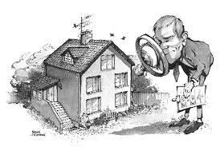
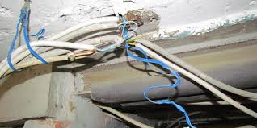
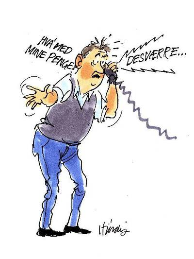

Kapitel 16 Handel med fast ejendom
Forståelsen af lovreglerne om køb og salg af fast ejendom i er især anvendelig for dig, der skal arbejde i ejendomshandel, ejendomsadministration, bank og realkredit, forsikring, samt revision og økonomifunktion, ved din rådgivning til køberen og sælgeren ved finansiering af fast ejendom mv.
Reglerne for handel med fast ejendom anvendes også i faget “Salg og Rådgivning”, samt brancheretningsfaget “Ejendomsmægler på finansøkonomuddannelsen”
Som studerende skal du være særlig opmærksom på følgende problemstillinger ved gennemgangen af handel med fast ejendom til brug for løsning af eksamensopgaverne:
• Købsaftalens indgåelse (aftalelovens § 1-7 og de særlige regler i lov om forbrugerbeskyttelse ved erhvervelse af fast ejendom kapitel.
• Fortrydelsesretten på 6 hverdage og betaling af en godtgørelse på 1% af den nominelle købesum. Ejendommen skal tilbageleveres i “samme stand og mængde” for at kunne fortryde ejendomskøbet.
• Mangler ved fast ejendom.
• Advokat – og finansieringsforbehold.
• Ejendomsmæglerens erstatningsansvar.
16.1 Lovgivning og aktører
Lovgivning til regulering af køb af fast ejendom:
Aftaleloven, købeloven og markedsføringsloven
Lov om formidling af fast ejendom, jf. Lov nr. 526 af 28. maj 2014 om formidling af fast ejendom m.v. (LOFE),
Formidlingsbekendtgørelsen, jf. bekendtgørelse nr 1230 af 21/11/2014.
Lov om forbrugerbeskyttelse ved erhvervelse af fast ejendom, jf. Lovbekendtgørelse nr. 1123 af 22. september 2015 om forbrugerbeskyttelse ved erhvervelse af fast ejendom mv. (LFFE)
Se lovene og formidlingsbekendtgørelsen. Se Lovsamlingen klik her!
Andre begreber om overdragelse af fast ejendom:
Et “mageskifte”* er ikke et køb af fast ejendom, men bytte af fast ejendom.
Der findes et begreb ved handel med fast ejendom: “Negotium mixtum cum donatione” er en blandet gave og køb, fx hvor en far overdrager en fast ejendom til sin søn for 500.000 kr, hvoraf 200.000 kr. er en gave.
“Skæringsdagen” ved et ejerskifte den dag, pr. hvilken renter, bidrag, ejendomsskatter m.v. fordeles mellem sælger og køber i en refusionsopgørelse. Er normalt pr. overtagelsesdagen.
Aktører og funktioner ved hushandlen:
En sælger af huset.
En køber af huset.
En ejendomsmægler som formidler salg af huset.
En advokat som berigtiger (godkender) huskøbet og tinglyser.
En bank som finansierer.
Et realkreditinstitut som finansierer.
En bygningssagkyndig som udarbejder tilstandsrapporten.
En elinstallatør som udarbejder elinstallationsrapporten.
Et forsikringsselskab som tegner en ejerskifteforsikring for køberen.
Video om gode råd om køb af bolig A-Z
Video Webinar: Nykredit giver gode råd om boligkøb
Video Finansøkonomens anvendelse af juraen i hverdagen i en ejendomsmæglervirksomhed
16.2 Gennemgang af en ejendomshandel
Afsnittet læses kun i hovedtræk, da det bliver mere detaljeret gennemgået under brancheretningsfaget for formidling af fast ejendom.
Gennemgang af en typisk handel – køb af privat bolig med hjælp fra ejendomsmægler og advokat.
Alle aktørerne har forskellige roller og skal koordinere indsatsen, før bolighandlen er på plads.
Det kan være afgørende at tingene sker i den rigtige rækkefølge, på det rigtige tidspunkt.
Køberen har en fortrydelsesret på 6 hverdage og koster 1 pct. af den nominelle købesum.
Video Få styr på førstegangskøbet: Sådan køber du en bolig
Formidlingsaftalen:

En aftale om formidlingsopdraget skal være skriftlig. LOFE § 29, stk. 1.31
Kravet om parternes underskrift skal bl.a. sikre, at der er fuldstændig enighed om de vilkår, som fremgår af aftalen, inklusive situationer, hvor sælgeren fx har anført tillægstekst i hånden.
Der stilles også krav om, at vederlagets størrelse eller beregningsprincipperne herfor skal fremgå af aftalen.
Hvis vederlagets størrelse ikke er et fast beløb, skal der i stedet angives beregningsprincipperne herfor.
Ved beregningsprincipper forstås grundlaget for beregningen af vederlaget, således at det er muligt for forbrugeren selv at beregne den endelige pris.
Det kan fx være i form af en vis procentdel af selve købesummen eller, hvis der er aftalt vederlag efter regning, en prisliste over de tilbudte og aftalte ydelser.
Som en konsekvens af LOFE § 28 om ansvarlig ejendomsmægler for hvert formidlingsopdrag skal det fremgå af formidlingsaftalen, hvem der er ansvarlig ejendomsmægler for sagen.
Og som en konsekvens af lovens § 31 om maksimal længde for en aftaleperiode, når der er aftalt resultatafhængigt vederlag, og der skal betales vederlag ved opsigelse, stilles der efter LOFE § 29, stk. 2 krav om, at formidlingsaftalen skal indeholde en angivelse af aftaleperiodens længde.
Ejendomsmægleren fortaber ifølge loven ikke automatisk retten til vederlag, hvis aftalen ikke er i overensstemmelse med LOFE § 29, stk. 1 og 2.
Konsekvensen af LOFE § 29’s bestemmelser er, at hvis en aftale ikke opfylder lovens krav, vil det skulle bedømmes ud fra en fortolkning af de almindelige aftaleretlige regler, hvad konsekvenserne heraf bør være.
Dette er i tråd med, hvad der er gældende i Norge, hvor der ligeledes er formkrav til formidlingsaftalen, men hvor manglende overholdelse af formkrav ikke i sig selv medfører vederlagsfortabelse eller ugyldighed.
I tilfælde, hvor ejendomsmægleren ikke har anført et vederlag, henvises til LOFE § 32, stk. 1, og bemærkningerne nedenfor.
Tvister omkring størrelsen af ejendomsmæglernes vederlag eller retten hertil henhører under Klagenævnet for Ejendomsformidling og domstolene.
Se LOFE § 29, stk. 3, hvorefter både sælger og ejendomsmægler har mulighed for at opsige aftalen uden varsel.
Der er intet formkrav til bestemmelsen, men hvis sælgeren har opsagt aftalen, vil det ofte være hensigtsmæssigt for ejendomsmægleren at bekræfte opsigelsen skriftligt.
Dermed undgås situationer, hvor der kan opstå et bevismæssigt problem om, hvem der har opsagt aftalen, hvilket kan være relevant ved aftaler med resultatafhængigt vederlag, jf. LOFE § 33, stk. 2.
Lovens bestemmelser om mulighed for vederlag ved opsigelse følger af LOFE § 33, se nærmere nedenfor.
Sælgers ret til at kunne opsige aftalen uden varsel kan ikke begrænses ved aftale, jf. LOFE § 2, stk. 2.
Dette medfører blandt andet, at ejendomsmægleren ikke i forbindelse med vederlagsaftaler efter regning kan betinge sig et opsigelsesgebyr, da det vil kunne betragtes som en omgåelse af reglen.
Ejendomsformidling må ikke betinges af andre ydelser:
Bestemmelsen i LOFE § 30, stk. 1, er en videreførelse af den tidligere omsætnings lovs § 23, stk. 1, hvor det fastslås, at ejendomsformidling ikke må betinges af, at køber eller sælger aftager andre ydelser end dem, der er nødvendige for formidlingens korrekte udførelse.
Bestemmelsen er med til at sikre, at der ikke indgås konkurrenceforvridende aftaler.
Større finansielle koncerner, der fx står i franchisegiverforhold til ejendomsmægleren, hindres herved udtrykkeligt i at stille krav om, at forbrugeren udelukkende aftager ydelser, der udbydes af selskaber inden for samme koncern som franchisegiver.
Således kan forbrugeren ikke forpligtes til at aftage accessoriske ydelser, som fx bestemte forsikringer.
Derimod er almindelige ydelser inden for ejendomsformidling, der ikke er obligatoriske, men alligevel ganske hyppigt forekommende og efterspurgte, såsom markedsføringstiltag, herunder annoncering, fremvisninger og eftersagsbehandling, ikke omfattet af bestemmelsens forbud.
Bestemmelsen hindrer tillige, at en aftale om formidling af sælgers nuværende bolig betinges af, at købet af ny bolig skal foregå gennem ejendomsmægleren eller med ydelser fra ejendomsmæglerens samarbejdspartnere.
Aftaleperioden for en formidlingsaftale må højst være seks måneder:
Bestemmelsen i LOFE § 31 er en delvis videreførelse af den tidligere omsætnings lovs § 12, stk. 1, og lyder, at aftaleperioden for en formidlingsaftale højst må være seks måneder.
Bestemmelsen i LOFE § 31 er dog modsat den tidligere gældende regel alene begrænset til tilfælde, hvor der er aftalt resultatafhængigt vederlag, og hvor det også er aftalt, at sælger skal betale vederlag ved opsigelse.
Behovet for, at aftalen udløber efter et givet tidsrum, gælder alene for aftaler med resultatafhængigt vederlag, hvor sælgeren har en forventning om, at hvis der ikke leveres et resultat, skal der ikke betales vederlag.
Aftaler af sådan karakter begrænses derfor til en periode, der maksimalt må være på seks måneder, og når perioden ophører, kan sælger vælge ikke at gå videre med aftalen uden at skulle betale ejendomsmægleren, heller ikke et opsigelsesgebyr, jf. LOFE § 33, stk. 2.
Hvis formidlingsaftalen, som sælger har indgået med ejendomsmægleren, ikke er en resultatafhængig aftale, men en aftale om betaling ”efter regning”, følger det modsætningsvis af LOFE § 31, at formidlingsaftalen kan indgås for en periode længere end seks måneder.
Efter udløbet af aftalen står det således forbrugeren frit at forlade aftalen. Aftalen kan endvidere højst forlænges med tre måneder ad gangen.
I forbindelse med den oprindelige aftales udløb, kan der således aftales en ny periode på tre måneder, som herefter kan forlænges med tre måneder ad gangen.
Udgangspunktet må dog være, at forlængelser tidligst kan aftales umiddelbart op til tidspunktet for aftalens udløb, da forlængelsen ellers ville blive en omgåelse af hovedreglen, idet forbrugeren de facto ville have indgået en aftale på fx ni måneders varighed.
Forlængelser kan også indgås inden for rimelig tid efter, at aftalen er udløbet. Hvis der er forløbet længere tid, vil der være tale om indgåelse af en ny formidlingsaftale.
Hvis aftalen fortsætter på de oprindeligt aftalte vilkår, og det eneste, der aftales, omhandler selve forlængelsen af aftaleperioden, stilles der ingen formkrav til forlængelsen.
Ejendomsmægleren bærer bevisbyrden for, at der reelt er sket en forlængelse eller fornyelse af aftaleperioden.
Forbrugeren kan således tilkendegive sin tiltrædelse af forlængelsen mundtligt, skriftligt, via sms, e-mail eller på anden måde.
Den mundtlige tilkendegivelse vil dog kunne indebære bevismæssige problemer for ejendomsmægleren, der i tvivlstilfælde skal løfte bevisbyrden for, at der rent faktisk er indgået en aftale om forlængelse.
Hvis aftaleperioden udløber, har ejendomsmægleren dog stadig ret til vederlag, hvis der efterfølgende indgås en købsaftale på baggrund af mæglerens indsats, jf. nærmere herom i LOFE § 32, stk. 2.
En “købsaftale” er såedes en aftale om overdragelse af fast ejendom, som har erstattet udtrykket slutseddel.
Oversigt over processen ved gennemførelse af hushandlen:
Formidlingsaftalen indgås mellem sælgeren og ejendomsmægleren.
Formidlingsaftalen skal indeholde betingelser om salgspris, annoncering og mæglers salær.
Formidlingsaftalen skal overholde reglerne i LOFE § 29 og formidlingsbekendtgørelsen § 2 og 3.
Formidlingsaftalen kan højst løbe i 6 måneder og kan herefter forlænges 3 måneder ad gangen, hvis vederlag er afhængig af resultatet, jf. LOFE § 31.
Vederlaget til ejendomsmægleren:
Ejendomsmæglerens vederlag reguleres af LOFE §§ 32-34.32
Med loven har lovgiver ophævet de tidligere begrænsninger af vederlagsformerne, som til dels har eksisteret siden den tidligere omsætningslovs ikrafttræden i 1994.
Som følge heraf vil der i lovens bestemmelser om vederlag reguleres så lidt, som det findes nødvendigt omkring ejendomsmæglerens vederlag, da udgangspunktet er aftalefrihed.
LOFE § 32, stk. 1, bestemmer, at ejendomsmægleren har ret til det vederlag, som er aftalt med sælger.
Bestemmelsen skal ses i sammenhæng med formkravet i LOFE § 29, stk. 1, nr. 2, til formidlingsaftalen, hvorefter vederlagets størrelse eller principperne for beregningen heraf skal være anført.
Som anført ovenfor i bemærkningerne til LOFE § 29, stk. 2, fortaber ejendomsmægleren ikke retten til vederlag alene på grund af manglende overholdelse af formkravene til aftalen.
Formålet med formkravet til oplysning om vederlagets størrelse eller beregningsprincipperne herfor i LOFE § 29, stk. 1, nr. 2, er, at ejendomsmægleren dermed får et incitament til at anføre vederlaget samt vilkårene herfor allerede ved selve aftalens indgåelse, idet en manglende overholdelse af pligten vil kunne være medvirkende til nedsættelse af vederlaget, jf. LOFE § 34.
Bestemmelsens krav i LOFE § 32, stk. 1, om, at vederlaget skal være aftalt med sælger, skal forstås i overensstemmelse med de almindelige aftaleretlige principper om aftalers indgåelse.
Det er formålet med bestemmelsen, at ejendomsmægleren som minimum kan dokumentere, at sælger og ejendomsmægler forud for underskrift af købsaftale har været i dialog om vederlagets størrelse eller beregningsprincipperne herfor.
Ellers vil ejendomsmægleren ikke være berettiget til at modtage vederlag.
Det er væsentligt for en sælger at kunne træffe en beslutning om salg af ejendommen på et oplyst grundlag.
Her vil størrelsen på vederlaget til ejendomsmægleren også spille en rolle.
Det forhold, at der har været en dialog med sælger om vederlagets størrelse eller beregningsprincipperne herfor, medfører, at når sælgeren aktivt vælger at underskrive en købsaftale om salg af sin ejendom, så skal sælgeren svare ejendomsmægleren vederlag herfor.
Sælgers aktive tilvalg af enten at sætte et salgsformidlingsarbejde i gang eller underskrive en købsaftale er således med til at understrege, at der fx på baggrund af forudgående drøftelser om vederlagets størrelse er indgået en aftale mellem ejendomsmægleren og sælger om et vederlag.
Hvorvidt vederlaget med rimelighed kan siges at fremstå så tydeligt og klart for sælgeren, at det er aftalt, skal bedømmes efter aftalelovens almindelige reger – herunder aftalelovens kapitel IV, som omhandler særlige regler om forbrugeraftaler.
Også den såkaldte “koncipistregel”, jf. aftalelovens § 38 b, vil være med til at sikre, at eventuelle uklarheder om vederlaget eller størrelsen herpå vil være til ulempe for ejendomsmægleren.
Ifølge koncipistreglen skal den part, der har affattet (konciperet) de ord, der skaber tvetydighed om fortolkningen, også bære risikoen for denne tvetydighed.
Når der er tale om forbrugeraftaler, bestemmer aftalelovens § 38 b, stk. 1, desuden, at hvis der opstår tvivl om betydningen af et aftalevilkår, som ikke har været genstand for individuel forhandling, gælder den fortolkning, som er mest gunstig for forbrugeren.
Fortolkningsreglen skal anvendes, når det efter inddragelse af alle fortolkningsmomenter er tvivlsomt, hvordan et aftalevilkår skal forstås.
Urimelige aftalevilkår binder ikke forbrugeren, og aftalen skal forblive bindende på i øvrigt samme vilkår, hvis den kan opretholdes uden de urimelige vilkår, jf. aftalelovens §§ 38 c og 36.
LOFE § 32, stk. 2, bestemmer, at ejendomsmæglerens ret til vederlag ikke begrænses til tilfælde, hvor en handel kommer i stand i aftaleperioden, men at ejendomsmægleren også har ret til vederlag, når en handel gennemføres efter udløbet af aftaleperioden, men på grundlag af ejendomsmæglerens indsats.
Bestemmelsen dækker både den situation, hvor en sælger og en køber venter med at indgå en købsaftale til formidlingsaftalen er ophørt for at spare vederlaget til ejendomsmægleren, men også hvor købsaftale mellem sælger og køber indgås på baggrund af en aftale, som ejendomsmægleren har udarbejdet, men formidlingsaftalen er udløbet.
I den situation, hvor køber og sælger bevidst holder ejendomsmægleren ude for at spare vederlag, findes LOFE § 32, stk. 1 som udgangspunkt alene relevant i det omfang, det er aftalt mellem sælger og ejendomsmægler, at ejendomsmæglerens vederlag eller en del heraf er resultatafhængigt, og dermed udløses ved indgåelse af en bindende købsaftale.
I sådanne tilfælde vil en sælger og en køber ellers kunne udnytte ejendomsmæglerens salgsindsats, hvis de blev enige om at vente med at indgå købsaftalen, til formidlingsaftalen var ophørt, enten ved udløb af aftaleperioden eller ved opsigelse.
I andre tilfælde, hvor ejendomsmægleren eksempelvis får ret til vederlag ved levering af ydelser efter regning, og vederlaget således ikke indeholder et resultatafhængigt element, vil det som udgangspunkt følge direkte af formidlingsaftalen, at et salg efter aftaleperiodens ophør ikke vil udløse vederlag til ejendomsmægleren, alene fordi ejendomsmægleren ikke har leveret en ydelse, der udløser ret til vederlag, jf. også bemærkningerne ovenfor til lovens § 31 om sælgers ret til at kunne opsige aftalen uden varsel.
Bestemmelsen i LOFE § 32, stk. 2, finder endvidere anvendelse i den situation, hvor en sælger opsiger formidlingsaftalen umiddelbart efter indgåelse af bindende købsaftale, og hvor der mellem mægler og sælger er aftalt resultatafhængigt vederlag.
I disse situationer har ejendomsmægleren ret til vederlag, uanset LOFE § 29, stk. 3, jf. LOFE § 33, stk. 2, om mæglers krav på rimeligt vederlag ved sælgers opsigelse af formidlingsaftalen.
Formidlingsopdraget er i disse situationer ofte ikke afsluttet på dette tidspunkt, men ejendomsmægleren har leveret sin ydelse efter aftalen, nemlig en bindende købsaftale.
LOFE § 32, stk. 2, vil fx finde anvendelse, hvis ejendomsmægleren har annonceret boligen, haft kontakt og forestået forhandlingerne med køber samt udarbejdet købsaftale.
Bestemmelsen i LOFE § 32, stk. 2, sikrer dog også ejendomsmægleren vederlag i tilfælde, hvor sælger og køber vælger at handle ejendommen uden om ejendomsmægleren, hvis parterne er kommet i kontakt med hinanden på baggrund af ejendomsmæglerens indsats.
Det vil ofte være i forbindelse med mæglerens annoncering af ejendommen på internettet og evt. i aviser, at købere bliver opmærksomme på en udbudt ejendom,
Der kan i konkrete tilfælde alene ved ejendomsmæglerens annoncering af boligen være tale om, at købsaftalen indgås på baggrund af ejendomsmæglerens indsats.
Hvorvidt salg efter udløbet af aftaleperioden er omfattet af bestemmelsen i LOFE § 32, stk. 2, må bero på en konkret vurdering.
Formidlingsaftalens bestemmelser om aftaleperioden, ret til vederlag samt forhold omkring opsigelse vil være af særlig relevans ved en eventuel vurdering.
Ejendomsmægleren har dog ikke krav på vederlag, hvis en anden ejendomsmægler medvirker efter aftalens ophør.
Ved en anden ejendomsmægler forstås ikke, at der inden for samme formidlingsvirksomhed har medvirket forskellige ejendomsmæglere, men at der er tale om medvirken af en anden ejendomsmægler fra en anden formidlingsvirksomhed.
Dette led er indsat for at beskytte den forbruger, som har valgt at indgå en formidlingsaftale med en ejendomsmægler hos én ejendomsformidlingsvirksomhed, og hvor forbrugeren eventuelt lige har haft ejendommen til salg hos en anden ejendomsmægler i en anden ejendomsformidlingsvirksomhed, mod at skulle betale vederlag til mere end en ejendomsmægler.
Skulle ejendomsmægler nr. 2 have handlet illoyalt i forhold til ejendomsmægler nr. 1, vil denne eventuelt kunne gøre et krav gældende mod nr. 2.
Det afgørende ved vurderingen af, om en anden ejendomsmægler har medvirket, er, om den anden ejendomsmægler har påtaget sig et formidlingsopdrag for sælger i forhold til den pågældende faste ejendom, og i hvilket omfang mægleren har iværksat eller påbegyndt salgsbestræbelser.
Det forhold, at køber og sælger henvender sig til en advokat eller en ejendomsmægler og beder denne udføre en afgrænset del af, hvad der normalt indeholdes i et formidlingsopdrag, eksempelvis udfærdigelse af en købsaftale, vil ikke i sig selv være at anse som, at der medvirker en anden ejendomsmægler.
Det vil dog bero på en konkret vurdering, hvorvidt der er tale om formidling eller ej, jf. LOFE § 1, stk. 1, nr. 1.
Endvidere har ejendomsmægleren krav på vederlag, hvis ejendomsmægleren sælger ejendommen, selvom formidlingsaftalen er udløbet, såfremt købsaftalen indgås på baggrund af ejendomsmæglerens indsats.
Der vil som udgangspunkt ikke være tvivl herom i de situationer, hvor ejendomsmægleren efter formidlingsaftalens udløb har fortsat salgsbestræbelserne og har udarbejdet købsaftalen.
For så vidt angår betingelserne for, hvornår det kan anføres, at der er indgået en købsaftale, skal handlen være gyldig og uden forbehold og betingelser, jf. dog bemærkningerne nedenfor vedrørende handel med betinget skøde.
Begrebet “betinget skøde” er et skøde, som er betinget af købesummens betaling eller af andre forhold, fx af en udstykningstilladelse. Når betingelserne er opfyldt, meddeles endeligt skøde til køberen.
Foreligger der forbehold eller betingelser, skal disse være fjernet, før retten til vederlag kan udløses.
Endvidere skal fortrydelsesfristen efter lov om forbrugerbeskyttelse ved erhvervelse af fast ejendom også være udløbet.
En handel er i almindelighed gennemført, når der er tinglyst anmærkningsfrit endeligt skøde.
Det forhold, at der er solgt på et betinget skøde, og at betingelsen er, at køber betaler et beløb, fx om et år, fratager imidlertid ikke ejendomsmægleren krav på vederlag.
Det forhold, at en ellers bindende handel ikke bliver gennemført på grund af købers eller sælgers forhold, fx misligholdelse, fratager heller ikke ejendomsmægleren ret til vederlag.
Ejendomsmægleren har i disse situationer krav på vederlag i overensstemmelse med det oprindeligt aftalte i formidlingsaftalen, eller hvad der i øvrigt ville kunne dokumenteres at være aftalt med sælger, jf. nærmere LOFE § 32, stk. 1.
Kravet udløses dog kun ved indgåelse af en bindende købsaftale.
Hvis forbrugeren har valgt at lade ejendomsmægleren fortsætte salgsbestræbelserne efter udløbet af formidlingsaftalen, men enten vælger at afstå fra at sælge uanset købstilbuddets størrelse eller at afbryde samarbejdet, kan ejendomsmægleren ikke kræve vederlag for arbejde foretaget efter aftaleperiodens udløb.
Det er således kun, når ejendomsmægleren rent faktisk leverer den helt centrale ydelse i formidlingen, nemlig en bindende købsaftale, og forbrugeren dermed får den ydelse, som var hele formålet med indgåelsen af aftalen, at det udløser vederlag til ejendomsmægleren.
Video Gennemgang af en købsaftale
16.3 Hvornår ejendomsmægleren har krav på vederlag ved opsigelse af formidlingsaftalen
LOFE § 34, stk. 1, fastslår, at ejendomsmægleren ved forbrugerens eller ejendomsmæglerens opsigelse af formidlingsaftalen alene har krav på vederlag, hvis der er et vilkår herom i formidlings-aftalen.
Ejendomsmæglerens ret til vederlag ved opsigelse opstår, uanset om det er ejendomsmægleren eller forbrugeren, der opsiger formidlingsaftalen inden for aftaleperioden, så længe det er aftalt i formidlingsaftalen.
Se dog undtagelsen hertil i lovens § 34, stk. 2, når det gælder resultatafhængigt vederlag.
Såfremt sælger misligholder aftalen, vil ejendomsmæglerens ret til vederlag i disse situationer skulle vurderes ud fra de almindelige aftaleretlige regler.
Det er antaget i teorien, men følger også af Erhvervsstyrelsens vejledende udtalelse af 11. september 2009, at hvis der ifølge den tidligere omsætningslov var aftalt vederlag efter regning, så kunne ejendomsmægleren få vederlag for sit erlagte arbejde samt dokumenterede omkostninger til både annoncering og fremskaffelse af dokumenter, uanset om det var ejendomsmægleren eller forbrugeren, der opsagde aftalen.
Dette princip videreføre LOFE § 34, stk. 1, uændret.
Da sådanne aftaler fremover kan være fortløbende, findes det også af den grund rimeligt, at parterne har mulighed for at aftale spørgsmål om vederlag i tilfælde af opsigelse.
Hvor formidlingsaftalen opsiges af ejendomsmægleren efter meget kort tid, kan det i forhold til en vurdering af evt. overtrædelse af god ejendomsmæglerskik efter omstændighederne være relevant at vurdere grundlaget for opsigelsen, herunder hvilke ydelser ejendomsmægleren har leveret, og om ydelserne har selvstændig værdi for sælger, jf. hertil også LOFE § 37 om de obligatoriske ydelser.
Der kan i sådanne tilfælde lægges vægt på, om sælger har modarbejdet ejendomsmæglerens salgsbestræbelser eller der har været samarbejdsvanskeligheder i øvrigt.
LOFE § 34, stk. 2, har videreført princippet om, at hvis der er aftalt et resultatafhængigt vederlag, har ejendomsmægleren alene krav på vederlag, hvis det er sælgeren, der opsiger aftalen, og hvis det er aftalt i formidlingsaftalen.
Det findes rimeligt at videreføre denne begrænsning, når der er tale om et resultatafhængigt vederlag, som er direkte afhængig af ejendomsmæglerens præstation og kun opnås, hvis der opnås et resultat, nemlig salg af boligen.
Ifølge den tidligere omsætningslovs § 12, stk. 3, var det kun, når forbrugeren opsagde aftalen, at ejendomsmægleren havde krav på et rimeligt vederlag, hvis formidlingsaftalen indeholdt vilkår herom.
Udgangspunktet er, at der skal betales efter regning for det udførte arbejde, samt at prisen skal være rimelig i forhold hertil.
Lyder regningen på et beløb, som er større end ¼ af det vederlag, der ville være udløst, hvis der var handlet, må ejendomsmægleren i almindelighed nøjes med ¼, der fungerer som en højestepris i denne situation.
Dette gælder også, selvom regningen står i rimeligt forhold til det udførte arbejde, medmindre der foreligger særlige omstændigheder, som gør dette urimeligt.
I praksis har “Klagenævnet for Ejendomsformidling” fx fundet, at der foreligger særlige omstændigheder i den situation, hvor ejendomsmægleren rent faktisk har en underskrevet købsaftale fra køber til udbudsprisen, men sælgeren ikke vil underskrive købsaftalen, måske fordi sælgeren har fortrudt at sælge ejendommen.
I disse situationer har nævnet tilkendt ejendomsmægleren fuldt vederlag, kun undtaget et mindre beløb til eftersagsbehandlingen, som jo ikke skal finde sted.
Det er med loven ikke intentionen at ændre på denne nævnspraksis, og ejendomsmæglerens ret til rimeligt vederlag i LOFE § 34, stk. 2, vil således i den ovenfor beskrevne situation udløse samme krav på vederlag som tidligere, medmindre andet er aftalt.
Desuden fastslås det i LOFE § 34, stk. 2, at vederlaget i disse situationer ikke kan overstige, hvad der er rimeligt i forhold til det udførte arbejde.
Det vil således være en konkret afvejning af, hvor langt i salgsprocessen ejendomsmægleren er nået, hvor man bl.a. kan lægge vægt på, hvor lang tid ejendommen har været til salg, hvor meget den har været annonceret og udgifterne hertil, hvor mange åbne huse og fremvisninger der har været etc.
Ejendomsmægleren bør altid kunne dokumentere det vederlag, som sælgeren bliver opkrævet.
LOFE § 34 gælder også for så vidt angår ejendomsmæglerens ret til vederlag ved opsigelse og vil omfatte den situation, hvor forbrugeren opsiger aftalen med ejendomsmægleren på grund af ejendomsmæglerens ikke ubetydelige pligtforsømmelse.
16.4 Ejendomsmæglerens obligatoriske opgaver ved formidling af fast ejendom
LOFE § 37, stk. 1, finder man minimumskravene til ejendomsmæglerens obligatoriske opgaver ved formidling af salg af fast ejendom fremgår.33.
Efter lovens § 37, stk. 1, har lovgiver nedsat antallet af de obligatoriske opgaver fra fem til fire, således at ejendomsmægleren skal:
Værdiansætte ejendommen.
Beregne salgsprovenu.
Udarbejde salgsopstilling.
Udarbejde udkast til købsaftale.
Det vil sige, at ejendomsmægleren ikke længere udarbejder forslag til finansiering samt beregne brutto- og nettoudgift, jf. LOFE § 42.
LOFE § 37, stk. 1, har til hensigt at bidrage til at skabe klarhed om ejendomsmæglerens rolle set i forhold til de andre professionelle aktørers roller i ejendomshandlen.
Bestemmelsen sætter fokus på, hvilke opgaver der falder inden for ejendomsmæglerens absolutte kernekompetence.
Udgangspunktet er endvidere, at færre obligatoriske opgaver kan bidrage til at øge konkurrencen og til, at der udvikles nye koncepter.
Dermed har LOFE § 37, stk. 1, samtidig til formål at bidrage til øget konkurrence på markedet for formidling af salg af fast ejendom.
Bestemmelsen er ikke udtømmende.
Der fremgår således også pligter af en række andre bestemmelser i loven, herunder LOFE §§ 24-26 om god ejendomsmæglerskik samt LOFE §§ 36, 39 og 41.
Ejendomsmæglerens pligt til hhv. at værdiansætte ejendommen, beregne salgsprovenu, udfærdige en salgsopstilling samt udarbejde et udkast til en købsaftale er beskrevet i stk. 1. Kravene til fremgangsmåde, indhold m.v. fremgår af LOFE §§ 37-39 og 46.
Erhvervsstyrelsen har fastsat nærmere regler om formidlingsopdragets indhold og udførelse (formidlingsbekendtgørelsen), jf. her Bekendtgørelse nr. 1230 21. november 2014 om formidling m.v. ved salg af fast ejendom. Se Lovsamlingen klik her!
16.5 Ejendomsmæglerens pligt til at udarbejde salgsprovenu til sælger
Bestemmelsen i LOFE § 38 vedrører ejendomsmæglerens pligt til at udarbejde salgsprovenu til sælger.
LOFE § 38, stk. 1, bestemmer, at ejendomsmægleren i forbindelse med udbud af en ejendom skal beregne et salgsprovenu til sælgeren ud fra salg til kontantprisen.
Beregningen skal ske umiddelbart efter formidlingsaftalens indgåelse. Da beregningen ikke er endelig, skal beregningen være i form af et salgsbudget.
Som et typisk eksempel på indtægt for sælger ved en handel kan nævnes kontant udbetaling og erlæggelse af købesummen.
Typiske udgifter kan være udgifter til indfrielse af realkreditlån og private pantebreve, ejerskiftegebyr, prioriteringsomkostninger, ejendomsmæglerens vederlag, herunder udlæg til tredjemand og markedsføringsomkostninger, samt udgift til tilstandsrapport, ejer-skifteforsikring, elinstallationsrapport og energimærke.
Begreber ved køb og salg af fast ejendom:
En “tilstandsrapport” er en rapport udarbejdet af en bygningssagkyndig vedrørende en bygnings fysiske tilstand.
En “energikonsulent” er en arkitekt eller ingeniør, der er godkendt til at udarbejde energimærkning og energiplan.
Et “energimærke” er en status over en ejendoms energi- og vandforbrug udarbejdet af en energikonsulent.
En “energiplan” er et forslag til energi- og vandbesparende foranstaltninger.
En “ejerskifteforsikring” er en forsikring, der dækker visse skjulte mangler ved huskøb. Kaldes også køberforsikring.
Et “ejerskiftelån” er et lån, der optages som led i en overdragelse af fast ejendom.
Uanset i hvilken form sælger betales, skal salgsprovenuet beregnes og angives med et kontantbeløb.
Beregningen af salgsprovenuet skal i øvrigt foretages i henhold til god ejendomsmæglerskik.
Ejendomsmægleren skal udlevere beregninger af salgsbudgettet og senere salgsprovenuet til sælger.
LOFE § 38, stk. 2, fastsætter, at hvis der undervejs aftales en ændret udbudspris, skal ejendomsmægleren udarbejde et nyt salgsbudget.
Ændringen medfører også en tilpasning af salgsopstillingen, som mægleren også skal tilrette i nødvendigt omfang. Således kan sælgeren følge med i og være oplyst om de økonomiske konsekvenser ved en ændret udbudspris.
LOFE § 38, stk. 3, bestemmer, at ejendomsmægleren ved salg skal udarbejde et salgsprovenu på grundlag af købsaftalens vilkår.
Der henvises til bemærkningerne ovenfor til LOFE § 38, stk. 1, for så vidt angår de poster, som typisk indgår i provenuberegningen.
Hvis der mod sædvane fx er tale om en overtagelse af sælgers indestående lån, skal salgsprovenuet således beregnes ud fra denne form.
Beregningen af salgsprovenuet udleveres til sælger samtidig med sælgers underskrift af købsaftale, da provenuet kan være afgørende for, hvorvidt sælgeren rent faktisk ønsker at acceptere købstilbuddet.
Den gæld, der eventuelt ligger bag et ejerpantebrev, skadesløsbrev og udlæg, indgår normalt ikke i beregningen, men det skal nævnes i beregningen, at der ikke er taget hensyn dertil.
Tilsvarende bør der gives særskilt oplysning om eventuel skattepligt af provenuet, som følge af forhold som ejertidens længde, ejendommens størrelse og andre let konstaterbare forhold.
16.6 Ejendomsmæglerens udarbejdelse af salgsopstilling
LOFE § 39, stk. 1 bestemmer, at ejendomsmægleren umiddelbart efter formidlingsaftalens indgåelse skal udarbejde en specificeret salgsopstilling.
Salgsopstillingen skal indeholde en udførlig beskrivelse af ejendommen, og herunder altså oplysning om de årlige ejerudgifter.
Ved den “årlige ejerudgift” forstås de samlede årlige udgifter forbundet med at eje ejendommen beregnet på grundlag af foreliggende oplysninger om ejendomsskat, ejendomsforsikring, gæld uden for købesummen, som overtages af køber, fællesudgifter m.v.
“Fællesudgifter” er de udgifter, som medlemmer fx i en ejerforening betaler i fællesskab, fx vedligeholdelse, renovation, forsikringer og trappelys.
Afgrænsningen af udgifterne er fastsat i formidlingsbekendtgørelsens §§ 6 (salgsopstillingen) og 12 (ejerudgiften).
16.7 Ejendommen skal udbydes med relevante oplysninger om forbrugsafhængige forhold
Bestemmelsen i LOFE § 40 fastsætter, at ejendommen også skal udbydes med relevante oplysninger om forbrugsafhængige forhold.
Disse forbrugsudgifter, som er forbundet med at eje ejendommen, varierer fra ejendom til ejendom og fra bruger til bruger.
Ejendomsmægleren skal ikke nødvendigvis basere oplysningerne om forbrugsafhængige forhold på sælgers seneste årsforbrug, hvis der kan etableres et bedre grundlag for opfyldelse af denne oplysningspligt, jf. nærmere formidlingsbekendtgørelsens §§ 13-16 om forbrugsafhængige forhold.
16.8 Ejendommen skal udbydes til en skønnet kontantpris
Det fremgår af LOFE i § 41, at der alene stilles krav om, at ejendommen skal udbydes til en skønnet kontantpris.
Udbudsprisen signalerer således sælgers ønske til en kontantpris og betragtes aftalemæssigt som en opfordring til køber om at afgive tilbud; et tilbud, som kan være i både opadgående eller nedadgående retning rent prismæssigt.
LOFE § 41, stk. 1, indeholder den grundlæggende regel for kontantprisprincippet, som er defineret i LOFE § 4, nr. 3.
Bestemmelsen i LOFE § 41, stk. 1, er ikke til hinder for, at der kan sendes et signal om, at der ønskes tilbud på ejendommen, men selv i sådanne situationer skal ejendommen udbydes med en angivet, skønnet kontantpris.
Ejendomsmægleren kan derfor ikke få potentielle købere til at deltage i budgivningen ved at udbyde ejendommen til en urealistisk lav pris.
God ejendomsmæglerskik vil også kunne inddrages i denne vurdering.
Med LOFE § 41, stk. 2, fastslås det som en konsekvens af ønsket om at øge købernes opmærksomhed på kontantpris og ejerudgifter, at der ved annoncering og markedsføring af ejendommen skal gives oplysning om ejendommens skønnede kontantpris og årlige ejerudgifter.
Det er ikke meningen, at ejendomsmægleren i forbindelse med udbuddet skal angive, at der er tale om en ”skønnet” kontantpris, da det forhold netop følger af ovenstående argumentation.
Kravet om oplysning om energimærke er bevaret på bekendtgørelsesniveau.
Oplysninger i forbindelse med annoncering og markedsføring skal overholde markedsføringslovens regler.
Markedsføringslovens §§ 5-6 bestemmer, at en erhvervsdrivendes ikke i sin handelspraksis må anvende urigtige oplysninger eller i kraft af sin fremstillingsform eller på anden måde vildlede eller kunne forventes at vildlede gennemsnitsforbrugeren, uanset om oplysningerne er faktuelt korrekte, og at en erhvervsdrivendes ikke i sin handelspraksis må vildlede ved at udelade eller skjule væsentlige oplysninger eller præsentere væsentlige oplysninger på en uklar, uforståelig, dobbelttydig eller uhensigtsmæssig måde. Lovsamlingen klik her!
Disse bestemmelser om forbud mod vildledning gælder også inden for fast ejendom.
Det vurderes, at markedsføringslovens bestemmelser, jf. markedsføringslovens §§ 5-7 er med til at sikre forbrugerne den fornødne beskyttelse i forbindelse med markedsføring af fast ejendom.
Hverken i Sverige, Norge, Tyskland, Storbritannien eller Holland findes der krav til omfanget af oplysninger ved markedsføring af fast ejendom.
16.9 Ejendomsmægleren må ikke udarbejde finansieringsforslag
Som konsekvens af præciseringen af ejendomsmæglerens rolle samt ophævelse af ejendomsmæglerens pligt til at opgive et brutto- og nettobeløb beregnet på baggrund af et standardfinansieringsforslag er det fastsat i LOFE § 42, stk. 1, at der er indført forbud mod, at ejendomsmægleren udarbejder eller lader udarbejde finansieringsforslag for en konkret ejendom, som fx kan inkluderes i annoncering og salgsopstillinger, herunder som et brutto- og nettobeløb.
Hvis pligten til at opgive et standardiseret brutto- og nettobeløb var blevet fjernet, uden at der samtidig var blevet indført et forbud mod beregning heraf, ville ejendomsmægleren kunne annoncere med et hvilket som helst finansieringsforslag, herunder lån, der har lavest mulige ydelser, fx baseret på variabel rente og afdragsfrihed, til skade for gennemsigtigheden for forbrugerne.
Bestemmelsen i LOFE § 42, stk. 1, er derfor med til at sikre, at der ved annoncering og markedsføring af ejendomme vil være fokus på kontantpris og ejerudgifter.
Det er herefter op til forbrugerne at søge rådgivning hos en bank eller et realkreditinstitut med henblik på at finde en egnet finansiering af boligkøbet.
Forbuddet gælder ikke den situation, hvor en ejendomsmægler fx via sin hjemmeside henviser til en banks eller realkreditinstituts hjemmesider, hvor en forbruger kan beregne mulige finansieringsforslag på baggrund af konkrete oplysninger om ejendommen.
Forbuddet efter denne bestemmelse samt forbuddet efter LOFE § 42, stk. 2, er heller ikke til hinder for, at ejendomsmægleren indgår samarbejdsaftaler med penge- og realkreditinstitutter med henblik på at henvise forbrugere, både sælger og køber, til disse, jf. også bemærkningerne ovenfor til LOFE § 21, stk. 1.
Indgås sådanne aftaler, skal ejendomsmæglervirksomheden dog overholde oplysningskravene i LOFE § 21, stk. 2 og 3. Henvisningerne vurderes at være til gavn for konkurrencen på bank- og realkreditinstitutmarkedet.
Der er i LOFE § 42, stk. 2, forbud mod, at ejendomsmæglere kan formidle finansiering til køb af fast ejendom.
Der er alene tale om forbud mod formidling af finansiering og ikke mod, at ejendomsmægleren henviser køber til samarbejdende pengeinstitut eller realkreditinstitut, jf. ovenfor.
Forbuddet er begrundet i at sikre en mere klar rolle for ejendomsmægleren, som ikke skal rådgive køber, heller ikke om finansiering af sit ejendomskøb.
Rådgivning herom bør gives af de rådgivere, som har forstand på alle de finansieringsformer, som i dag tilbydes på det finansielle marked.
Forbuddet er desuden med til at adskille købers beslutning om køb af ejendom fra købers beslutning om finansiering af ejendommen.
Desuden er der inden for de seneste år indført skærpede og særlige regler for finansielle virksomheder og rådgivere, herunder banker og realkreditinstitutter, om rådgivning om lån med sikkerhed i fast ejendom, herunder tilbud af visse lån med sikkerhed i fast ejendom.
16.10 Ejendomsmægleren er kun sælgers repræsentant
Bestemmelsen i LOFE § 26 fastlægger det overordnede princip om, at ingen må være repræsentant for sælger og køber i samme handel.34
LOFE § 26, stk. 1, svarer til den tidligere omsætningslovs § 15, stk. 1, og klargør ejendomsmæglerens rolle som sælgers repræsentant, fordi ingen ejendomsmægler kan varetage købers og sælgers interesser lige godt i den samme ejendomshandel.
Begge parter kan have brug for at have hver deres rådgiver, som de betaler direkte hver for sig.
Herved forstås, at ejendomsmægleren ikke må optræde som repræsentant for både sælger og køber.
Ejendomsmægleren kan fungere som formidler af et salg, men kan også som andre erhvervsdrivende fungere som køberrådgiver, køberrepræsentant eller yde anden bistand til køber.
Bestemmelsen i LOFE § 26 indebærer ikke, at en ejendomsmægler ikke må medvirke til at afslutte en bindende aftale, selvom køber vælger ikke at have egen rådgiver.
Bestemmelsen i LOFE § 26 forhindrer derimod, at ejendomsmægleren optræder som rådgiver for køberen, når ejendomsmæglerens opdrag samtidig er at sælge ejendommen.
Hvor to parter, der begge har givet deres ejendom til formidling hos samme mægler, ønsker at erhverve hinandens ejendomme, må ejendomsmægleren sikre sig, at hver af parterne er orienteret om, at ejendomsmægleren repræsenterer hver part som sælger i hvert af salgene.
Ejendomsmægleren kan ikke repræsentere nogen af parterne som købere i nogen af salgene, heller ikke selvom mægleren opsiger sin formidlingsaftale med den ene sælger, da mægleren ellers ville kunne udnytte den viden, som mægleren har opnået i løbet af aftaleperioden om denne sælger og denne sælgers ejendom, hvilket synes urimeligt og i øvrigt i strid med god ejendomsmægler-skik.
Bestemmelsen i LOFE § 26 er ikke til hinder for, at en part, der ønsker at sælge, sættes i forbindelse med en part, der ønsker at købe, fx via en database.
Bestemmelsen i LOFE § 26 medfører, at ejendomsmægleren ikke må bistå køber med udførelse af berigtigelsen af ejendomshandlen, uanset om aftale herom først indgås, efter handlen er endelig.
Loven gør det klart, at mægler er sælgers mand, så købere i højere grad bliver tilskyndet til at skaffe sig professionel rådgivning.
Ved en berigtigelse forstås, at handlen gennemføres i overensstemmelse med de aftalte vilkår i købsaftalen.
Da det ikke kan udelukkes, at der efter købsaftalens indgåelse kan opstå situationer, hvor parterne har modsatrettede interesser, og da køberen ikke må misforstå karakteren af en berigtigelse kontra karakteren af reel køberrådgivning, må ejendomsmægleren derfor ikke berigtige handlen på vegne af køber, når ejendomsmægleren har formidlet salget for sælger.
Køber må således antage en anden rådgiver end ejendomsmægleren til at bistå sig med berigtigelsen.
LOFE § 26, stk. 2, bestemmer, at det ikke kun er på personniveau, at man ikke kan repræsentere både sælger og køber i samme handel.
Dette er ikke tidligere fremgået eksplicit af omsætningsloven, men af bemærkningerne til omsætningsloven.
Nu er det anført direkte i lovteksten, at ingen inden for samme formidlingsvirksomhed, herunder ejere, ansatte eller personer med tilsvarende tilknytning til virksomheden, kan optræde som repræsentant for køber, hvis ejendommen er solgt af en ejendomsmægler inden for samme virksomhed.
Det er ikke ejendomsformidlingsvirksomhedens organisationsform, der er afgørende for, hvornår der foreligger én eller flere repræsentanter.
En ejendomsformidlingsvirksomhed, som har flere forretningssteder, medfører således ikke, at der foreligger flere repræsentanter i bestemmelsens forstand.
Til gengæld vil der være flere repræsentanter, hvis en række selvstændige ejendomsmæglere samarbejder i en kæde.
Et interessentskab skal anses som én virksomhed, således at én deltager ikke kan være sælgers ejendomsmægler samtidig med, at en anden deltager er købers repræsentant.
LOFE § 26, stk. 3, er en forlængelse af god skik-reglen og er en modificeret udgave af den tidligere omsætningslovs § 15, stk. 2, 3. pkt., idet ejendomsmægleren skal oplyse – og ikke rådgive – køber om mulighed, ikke behov, for at søge egen bistand.
Sikringen af køberens interesser skal ske ved, at mægleren henviser køberen til at søge egen rådgiver.
LOFE § 26, stk. 3’s ordlyd har til hensigt at tydeliggøre, at ejendomsmægleren alene kan rådgive sin opdragsgiver, dvs. sælger, og dermed kun kan oplyse køber.
Det er med LOFE § 26, stk. 3, ikke længere op til ejendomsmægleren at skulle rådgive køber om nogle forhold, og ejendomsmæglerens rolle vil alene være at oplyse køber om alle de relevante forhold omkring ejendommen.
Købers vurderinger og beslutninger skal herefter træffes af køber selv, eventuelt med hjælp fra en rådgiver.
Hvorvidt køber ønsker at benytte sig af rådgiver(e), er helt op til køber selv at beslutte.
Sikringen af købers interesser sker ved, at ejendomsmægleren henviser køber til at søge egen rådgiver.
Ejendomsmægleren skal ikke kun oplyse køber om muligheden for at søge juridisk rådgivning, men også rådgivning af byggeteknisk karakter samt af økonomisk og finansiel karakter.
16.11 Værdiansættelsen
Det fremgår af LOFE § 27, stk. 1, at ejendomsmægleren skal angive, hvilken kontantpris ejendommen skønnes at kunne sælges til inden for et givet tidsrum.35
Den værdiansættelse, som reguleres i bestemmelsen, er den, der sker i forbindelse med salg af fast ejendom, dvs. den værdiansættelse, som er direkte relateret til omsætningssituationen, uanset om der er indgået en formidlingsaftale.
Bestemmelsen i LOFE § 27 gælder også for de værdiansættelser, som en ejendomsmægler foretager forud for eventuel indgåelse af en formidlingsaftale.
Udenfor falder værdiansættelser af fast ejendom i andre situationer, fx værdiansættelser, der foretages med henblik på skifteopgørelser og opgørelser ved dannelse af selskaber (apportindskud).
Ved værdiansættelsen skal ejendomsmægleren tage hensyn til markedsforholdene, de fysiske omstændigheder omkring ejendommen samt andre relevante forhold.
Ejendomsmægleren kan ikke tage et generelt forbehold for eventuelle synlige mangler. Sådanne fejl og mangler vil typisk fremgå af en byggeteknisk gennemgang, bl.a. en tilstandsrapport, el-installationsrapport eller lignende.
Det må som udgangspunkt antages at være i strid med god ejendomsmæglerskik, hvis ikke ejendomsmægleren i forbindelse med værdiansættelse foretager en fysisk besigtigelse af ejendommen, jf. Kendelse (103-2009) fra Disciplinærnævnet for Ejendomsmæglere afsagt i 2011.
Studenteropgave
Find og gennemgå Kendelse (103-2009) fra Disciplinærnævnet for Ejendomsmæglere afsagt i 2011.
LOFE § 27, stk. 2, pålægger ejendomsmægleren at rådgive sælgeren om behov og mulighed for en byggeteknisk gennemgang i forbindelse med værdiansættelsen, herunder muligheden for at benytte sig af huseftersynsordningen.
Video Huseftersynsordningen

Dette indebærer, at der generelt skal være orienteret om risikoen for skjulte fejl og mangler samt reglerne om mangelsansvar og om mulighederne for at imødegå risikoen ved en byggeteknisk gennemgang og forsikringstegning.
Tillige skal der være rådgivet om de juridiske konsekvenser af, at der ikke foreligger en rapport fra en byggeteknisk gennemgang.
Efter indførelsen af huseftersynsordningen vil ejendomsmægleren ofte tage forbehold for en byggeteknisk gennemgang ved sin værdiansættelse af ejendommen.
Ejendomsmæglerens pligt som formidler til at rådgive sælger om byggeteknisk gennemgang, huseftersynsordningen m.v. og til at oplyse køber om rapporten fra en byggeteknisk gennemgang samt muligheden for at tegne ejerskifteforsikring fremgår af LOFE §§ 44-45.
Hvis sælgeren er utilfreds med ejendomsmæglerens værdiansættelse, så kan sælgeren ikke klage til Klagenævnet for Ejendomsformidling, men må anlægge sag ved domstolene.

Video Ejerskifteforsikring – hvorfor- og hvordan
Oversigt over processen i en ejendomshandel:
Når der er indgået formidlingsaftale med sælgeren skal ejendomsmægleren:
Varetage sælgers interesser og rådgive sælger, herunder i LOFE § 37.
Værdiansætte ejendommen og fastsætte prisen, jf. LOFE §§ 27 og 41.
Udarbejde et finansieringsforslag.
Beregne sælgerens provenu, jf. LOFE § 38.
Udarbejde salgsopstilling og udkast til købsaftale jf. LOFE §§ 39 og 46.
Fravigelser fra standarden skal fremhæves over for køberen.
Der indsættes ofte et advokat og/eller et finansieringsforbehold.
Købsaftalen gennemses af køberens advokat.
Salgsmaterialet er en opfordring til at køberen afgiver tilbud.
Give køberen alle de relevante oplysninger for ejendomshandlen
Ejendomsmægler må ikke rådgive både sælger og køber, men er udelukket sælgerens mand, jf. LOFE § 26.
Køberen skal oplyses om sin fortrydelsesretten af sælgeren/formidleren.
16.12 Køberens fortrydelsesret ved køb af fast ejendom mv.
I dansk ret er udgangspunktet, at der ikke gælder en almindelig fortrydelses- og ombytningsret.
Der er i lov om forbrugerbeskyttelse ved erhvervelse af fast ejendom mv. fastsat en generel fortrydelsesret ved erhvervelse af fast ejendom og ved indgåelse af aftale om opførelse af en bolig, jf. nærmere Lov om forbrugerbeskyttelse ved erhvervelse af fast ejendom (forkortet; LFFE) kapitel 2 og 336
Se lov om forbrugerbeskyttelse ved erhvervelse af fast ejendom mv. Lovsamlingen klik her!
Ifølge lovforarbejderne til denne lov har bevæggrunden for indførelsen af fortrydelsesretten været, at der i overvejende grad er tale om ikke-sagkyndiges indgåelse af en særdeles vidtrækkende og kompliceret aftale af afgørende betydning for de pågældendes økonomi.
En privat person har således yderst vanskeligt ved, på en begrænset tid, at foretage en fyldestgørende overvejelse af alle en ejendomshandels økonomiske og juridiske konsekvenser.
Fortrydelsesretten skal i denne sammenhæng begrebsmæssigt ses i modsætning til annullation, hvor effekten er, at køber frigøres fra forpligtelsen til naturalopfyldelse, men derimod ikke fra pligten til at svare positiv opfyldelsesinteresse.
Reglerne om en fortrydelsesret ved køb af fast ejendom har karakter af traditionel forbrugerbeskyttelse, eftersom det alene er køberen, der har fortrydelsesret.
Anvendelsesområdet for LFFE kapitel 2 er dog ikke, som i anden civilretlig forbrugerbeskyttelseslovgivning, afgrænset til forbrugeraftaler.
Anvendelsesområdet for kapitel 2 er på den ene side bredere end i anden forbrugerbeskyttelseslovgivning, idet fortrydelsesretten som hovedregel gælder i alle tilfælde, hvor ejendommen er bestemt til beboelse for køberen.
Reglerne omfatter dermed ikke kun erhvervsdrivendes salg og formidling af salg til forbrugere, men også handler, hvor både køber og sælger er forbrugere.
Anvendelsesområdet for kapitel 2 er på den anden side også snævrere end i anden forbrugerbeskyttelseslovgivning, idet fortrydelsesretten ikke gælder i alle tilfælde, hvor køberen skal bruge ejendommen ikke-erhvervsmæssigt (fx som kolonihave), men kun hvor ejendommen er bestemt til beboelse for køberen.
Efter LFFE § 6, stk. 1, gælder fortrydelsesretten for det første for aftaler om køb af fast ejendom, når ejendommen hovedsagelig er bestemt til beboelse for køberen.
Reglerne om fortrydelsesret gælder, uanset om sælgeren er en privatperson, en offentlig institution eller en erhvervsvirksomhed.
Det afgørende er, hvad køberen konkret skal bruge ejendommen til. Det er uden betydning, om ejendommen sælges med eller uden professionel bistand til en af parterne.
Har to eller flere personer købt ejendommen i fællesskab, kan fortrydelsesretten kun udøves af køberne i fællesskab.
Hvis det kun er den ene af køberne, som ønsker at træde tilbage, kan dette således ikke ske med hjemmel i loven.
I forhold til anvendelsesområdet for lovens kapitel 1, indeholder bestemmelsen i LFFE § 6, stk. 1, den udvidelse, at fortrydelsesretten i kapitel 2 også omfatter aftaler om køb af andel i en andelsboligforening og køb af aktie eller andet adkomstdokument med tilknyttet brugsret til bolig.
Fortrydelsesretten omfatter utvivlsomt køb af andel i en eksisterende andelsboligforening, hvorimod fortrydelsesretten ikke finder anvendelse ved stiftelsen af en andelsboligforening, hvad enten foreningen stiftes med henblik på overtagelse af en eksisterende ejendom eller med henblik på overtagelse af nybyggeri, der opføres med offentligt tilskud.
Fortrydelsesretten gælder ej heller for aftaler om køb af fast ejendom mv. på auktion, eller når der ved aftalens indgåelse er indgivet begæring om tvangsauktion, og køberen vidste eller burde vide dette, jf. LFFE § 6, stk. 2, 1. pkt.
Fortrydelsesretten gælder endelig ikke for køb af landbrugsejendomme, der er undergivet landbrugspligt, eller for køb, som er omfattet af lov om forbrugeraftaler, der giver brugsret til fast ejendom på timesharebasis, jf. LFFE § 6, stk. 2, 2. pkt.
Ved køb af fast ejendom på timesharebasis gælder der særlige fortrydelsesregler, jf. lov nr. 102 af 15. februar 2011 om forbrugeraftaler om brugsret til logi på timesharebasis, længerevarende ferieprodukter mv.
Efter timesharelovens § 9 har køberen af en timesharebolig en fortrydelsesret, som skal være gjort gældende inden for en frist på 14 dage. Fortrydelse kan som udgangspunkt, jf. dog denne lovs § 10, ske inden for en periode på 14 dage fra den dag, hvor aftalen er indgået, eller fra den dag, hvor forbrugeren har modtaget aftalen, hvis sidstnævnte tidspunkt ligger senere, jf. denne lovs § 9, stk. 2.
Har sælgeren handlet som led i sit erhverv, eller er aftalen indgået eller formidlet for sælgeren af en erhvervsdrivende som led i dennes erhverv, har sælgeren bevisbyrden for, at aftalen ikke er omfattet af reglerne om fortrydelsesret, jf. LFFE § 6, stk. 3.
Det betyder i praksis, at sælgeren navnlig skal bevise, at køberen ikke har erhvervet ejendommen hovedsageligt med henblik beboelse.
Det forudsættes i lovforarbejderne, at bevisbyrdereglen ikke finder anvendelse i tilfælde, hvor sælgeren eller formidleren er blevet vildledt af køberen til at tro, at køberen handlede erhvervsmæssigt, dvs. hvis køberen med vilje har givet sælgeren indtryk af, at køberen handlede som led i sit erhverv.
Generelt om fortrydelsesretten:
Når der er indgået en aftale om køb, kan køberen træde tilbage fra aftalen på de betingelser, som er nævnt i LFFE §§ 8-11, jf. nærmere LFFE § 7, stk. 1.
Fortrydelsesretten omfatter aftalen i sin helhed – ikke enkelte dele af aftalen.
Købers fortrydelsesret gælder som udgangspunkt, selv om sælger som led i aftalen er fraflyttet ejendommen, og selv om køber er flyttet ind.
Der skal være indgået en købsaftale, før fortrydelsesretten bliver aktuel.
Det er uden betydning, om aftalen er endelig eller betinget af et eller flere forhold.
Fortrydelsesretten gælder fx ved siden af et eventuelt advokatforbehold, se nærmere nedenfor.
16.13 Tilbagekaldelse af købstilbud
Det følger af aftalelovens § 7, at et tilbud normalt kan tilbagekaldes, så længe det ikke er kommet til modtagerens kundskab.
I visse tilfælde kan et tilbud dog tilbagekaldes, selv om det er kommet til modtagerens kundskab, jf. aftalelovens § 39, 2. pkt., hvorefter et tilbud kan tilbagekaldes, hvis det endnu ikke har virket bestemmende på modtagerens handlemåde.
Det følger af LFFE § 7, stk. 2, at så længe et tilbud om køb ikke er antaget af sælgeren, kan køberen tilbagekalde sit tilbud ved at give underretning herom til sælgeren.
Reglen i LFFE § 7, stk. 2, fraviger således de generelle regler i aftaleloven, da der er tale om en udvidelse af retten til at tilbagekalde tilbud, hvorefter køber kan træde tilbage fra et tilbud, som efter aftaleretlige regler er bindende, så længe tilbuddet ikke er accepteret af sælger.
Hvis der er sket rettidigt tilbagekaldelse af købstilbudet, efter LFFE § 7, stk. 2, så er der ingen købsaftale, og dermed finder fortrydelseretten ikke anvendelse og der skal ikke betales godgørelse til sælgeren.
Tilbagekaldelse kan ske, indtil sælgers accept er kommet frem til køber.
Det må således antages, at tilbagekaldelse af et købstilbud efter bestemmelsen er rettidigt, hvis underretningen herom kommer frem til sælger, før dennes accept er kommet frem til køber.
En mundtlig underretning til sælgeren herom har samme retsvirkning som en skriftlig.
Af bevismæssige grunde bør underretningen dog gives skriftligt.
Køber skal ikke betale en godtgørelse, hvis underretningen til sælger om, at tilbuddet tilbagekaldes, kommer rettidigt frem, jf. LFFE § 11.
LFFE § 7, stk. 2, kan ikke ved aftale fraviges til skade for køberen, jf. LFFE § 21, stk. 2.
Fortrydelsesfristen:
Efter LFFE § 8, stk. 1 er fortrydelsesretten betinget af, at køberen senest 6 hele hverdage efter aftalens indgåelse giver skriftlig underretning til sælgeren om, at køberen vil træde tilbage fra aftalen.
Underretningen skal være skriftlig og været kommet frem inden fristens udløb.
Det er forudsat i lovforarbejderne, at den dag, hvor fortrydelsesfristen begynder at løbe, ikke tælles med, og at køberen således altid har en frist på 6 hele hverdage.
Fristen på 6 hverdage indebærer, at køberen altid har mindst én hel weekend til rådighed, idet lørdag ikke regnes for en hverdag, jf. LFFE § 13.
Juleaftensdag og nytårsaftensdag betragtes som hverdage, medmindre disse dage falder i en weekend.
Bortset fra de tilfælde, hvor særlige helligdage kommer imellem, vil situationen være den, at hvis aftalen er indgået en fredag, lørdag eller søndag, skal køberens underretning være kommet frem til sælgeren eller formidleren senest den mandag, der ligger henholdsvis 10, 9 eller 8 dage frem i tiden.
Er aftalen indgået mandag-torsdag skal underretningen være kommet frem senest 8 dage efter den pågældende dag. Underretningen skal på sidste dagen være kommet frem inden døgnets ophør.
Efter almindelige aftaleretlige regler vil underretningen være kommet frem, når sælgeren under normale forhold vil have haft lejlighed til at gøre sig bekendt med underretningens indhold.
Et brev/e-mail er fx kommet frem, når det er lagt i sælgerens postkasse/indkomne beskeder eller kastet ind ad brevsprækken.
I praksis har det navnlig givet anledning til tvivl, om et anbefalet brev er kommet frem, når der er lagt besked hos modtageren om, at brevet ligger klar til afhentning på posthuset.
Dette vil som udgangspunkt ikke være tilfældet, idet det normalt ikke fremgår af meddelelsen fra posthuset, hvem der er afsender, eller hvad brevets nærmere indhold er.
Det er køberen, der må sørge for, at underretningen om, at han vil træde tilbage, kommer frem til sælgeren.
Hvis sælgeren har haft flere personer beskæftiget med salget, kan køber med frigørende virkning give meddelelse til den person, der kan modtage tilbagetrædelseserklæringen på sælgerens vegne – typisk en ejendomsformidler.
Kravet om skriftlig underretning må antages at have til formål at forebygge efterfølgende bevistvivl om, hvorvidt fortrydelsesretten er gjort gældende, eller hvorvidt fortrydelsesfristen er overholdt, og bestemmelsen bør næppe fortolkes snævert.
Underretning kan gives ved brev, telegram og telefax og må ligeledes antages at kunne gives via e-mail og sms.
Er aftalen indgået ved køberens antagelse af sælgerens tilbud om salg, skal underretning være kommet frem senest 6 hverdage efter, at tilbuddet er kommet til køberens kundskab, jf. nærmere LFFE § 8, stk. 2.
Tidspunkt, hvor fortrydelsesretten begynder at løbe:
I LFFE § 8 sondres der mellem to situationer:
Sælgeren afgiver et salgstilbud, som accepteres af køberen (LFFE § 8, stk. 2), eller
Aftalen indgås på anden måde (LFFE § 8, stk. 1).
Ad. A. Fortrydelsesperioden kan i alle tilfælde først begynde at løbe, når købsaftalen er indgået, jf. LFFE § 7, stk. 1.
I de tilfælde, som er omfattet af LFFE § 8, stk. 2, regnes fristen fra det tidspunkt, der ligger før aftalens indgåelse, idet fristen beregnes fra den første hverdag efter, at salgstilbuddet er kommet til køberens kundskab.
Da der som nævnt først er noget at fortryde, når der er indgået en aftale, kan reglen beskrives sådan, at køberens betænkningstid i disse tilfælde fradrages i 6-dages fristen.
I lovforarbejderne til LFFE anføres det:
»I tilfælde, hvor aftalen indgås ved, at sælgeren afgiver et tilbud om salg, løber 6-dages fristen fra det tidspunkt, hvor sælgeren efter aftaleretlige regler ikke længere kan tilbagekalde tilbuddet, dvs. når det er kommet til køberens kundskab, jf. stk. 2. I nogle af disse tilfælde vil 6-dages fristen allerede være udløbet inden aftalen indgås, således at der slet ikke bliver nogen fortrydelsesret.«
Et salgstilbud er kommet til købernes kundskab, når det er blevet læst eller hørt af køberen eller en anden person, der er bemyndiget til at handle på dennes vegne.
Det kan i praksis være vanskeligt at afgøre, om der foreligger et tilbud eller opfordring til tilbud, jf. herved aftalelovens § 9. ’
En salgsopstilling, som ejendomsformidleren udleverer til alle købsinteresserede, kan normalt kun anses som en opfordring til at gøre tilbud.
LFFE § 8, stk. 2, finder kun anvendelse på det tilbud, som køberen accepterer med den virkning, at der indgås en aftale.
Ad. B. LFFE § 8, stk. 1, gælder i situationer, hvor købsaftalen indgås på enhver anden måde end ved, at køberen accepterer et tilbud om salg.
I praksis indgås de fleste købsaftaler vedrørende erhvervelse af fast ejendom, ved at sælgeren accepterer et tilbud fra køberen, fx når køberen underskriver købsaftalen, hvorefter sælger ved sin underskrift acceptere købet.
Fortrydelsesfristen regnes i alle disse tilfælde fra aftalens indgåelse.
Loven indeholder imidlertid ikke regler om, hvornår en købsaftale er indgået, og dette spørgsmål afgøres efter de almindelige aftaleretlige regler.
Om afgørelsen af, hvornår aftalen er indgået, har Justitsministeriet som ressortmyndighed i en skrivelse af 6. februar 1996 til Finansrådet (FinansDanmark) anført, at det, efter ministeriets opfattelse, er mest nærliggende, i den foreliggende sammenhæng, generelt at lægge vægt på det tidspunkt, fra hvilket køberen er bundet af sælgerens accept. Udgangspunktet er det tidspunkt, hvor accepten er kommet frem til køberen.
Accepten anses i almindelighed for at være kommet frem, når accepten er nået så vidt, at modtageren (tilbudsgiveren eller dennes repræsentant) under normale forhold vil have lejlighed til at gøre sig bekendt med dens indhold.
Der må dog efter omstændighederne tages hensyn til særlige forhold hos modtageren – fx at denne er bortrejst – når disse forhold var eller burde være kendt for den, der gav accepten.
Sælgers accept af et købstilbud vil normalt ikke kunne anses for at være kommet frem til køberen, hvis accepten (den underskrevne købsaftale) alene er modtaget af en ejendomsformidler, der repræsenterer sælgeren.
Betingede købsaftaler (advokatforbehold mv.:
Video Fortrydelsesret og advokatforbehold i en bolighandel
Efter LFFE § 8, stk. 1 regnes fortrydelsesfristen fra aftalens indgåelse.
Det er uden betydning, om aftalen er endelig eller betinget.
Dette betyder bl.a., at et sædvanligt advokatforbehold i en købsaftale ikke udskyder eller på anden måde påvirker fortrydelsesfristen, men blot gælder ved siden af denne.
I lovforarbejderne til LFFE anføres følgende om advokatforbehold:
»Fortrydelsesretten gælder, som ovenfor nævnt, fra aftalens indgåelse, uanset om aftalen er endelig eller betinget af et eller flere forhold, fx af, at købers advokat godkender aftalen*.
Hvis advokaten i det nævnte eksempel ikke godkender aftalen, er betingelsen for aftalen imidlertid ikke opfyldt, og der bliver i så fald ikke tale om at benytte fortrydelsesretten efter loven.
Sådanne aftalte betingelser gælder således ved siden af fortrydelsesretten, og hvis de ikke opfyldes, falder handlen bort, uden at der, som tidligere nævnt, skal betales godtgørelse efter lovens § 11«.
Et advokatforbehold kan efter omstændighederne være formuleret således, at det tillægger køber en fakultativ ret til at træde tilbage fra handlen uden pligt til at betale godtgørelse efter LFFE § 11 og uden at have andre konsekvenser.
Blot en meddelelse fra den pågældende advokat om, at handlen ikke kan godkendes, vil således efter omstændighederne medføre, at købsaftalen bortfalder i sin helhed.
Et forbehold, der ikke indeholder en sidste frist for meddelelse af godkendelse eller nægtelse heraf, mister sin gyldighed, hvis den pågældende advokat ikke reagerer inden rimelig tid.
Efter retspraksis maksimalt ca. 30 dage.
Et advokatforbehold løber derfor ikke til evig tid - kun en måned.
Se dommen i U 1994.13/1 V, hvor et advokatforbehold i en slutseddel ikke kunne gøres gældende efter godt en måneds forløb. Sælgeren af en fast ejendom tog i slutsedlen, som han underskrev den 4. eller 6. april, forbehold om sin advokats godkendelse af slutsedlen. Ved skrivelse af 9. maj meddelte advokaten, at han ikke kunne godkende slutsedlen. Da advokatforbeholdet herefter ikke var gjort gældende inden rimelig tid, var sælgeren bundet af aftalen. Dommen klik her!
Advokaten skal rådgive køberen inden udløbet af advokatforbeholdet, jf. U 2015.2846/2 H. Advokat havde tilsidesat god advokatskik og var erstatningsansvarlig over for købere af fast ejendom for udgifter til ulovlige elinstallationer, da han ikke havde rådgivet køberne inden udløbet af fristen for et advokatforbehold i forbindelse med handlen. Dommen klik her!
Tinglysning af aftale om køb:
Såfremt en aftale om køb er blevet tinglyst, er fortrydelsesretten betinget af, at køberen inden udløbet af den i LFFE § 8 nævnte frist foretager det fornødne til aflysning af aftalen, jf. LFFE § 9.
Det er uden betydning, om skødet er endeligt eller betinget. Den nævnte 6 dages frist beregnes på samme måde som efter LFFE § 8.
I tilfælde, hvor køberen har taget initiativ til tinglysning, skal køberen selv sørge for at få aftalen aflyst.
Det er køberen, der bærer risikoen for, at registreringen aflyses.
Går der noget galt ved registreringen, har køberen ikke opfyldt sin forpligtelse inden fortrydelsesfristens udløb, hvorfor fortrydelsen ikke får virkning.
Hvis det er sælgeren, som har sørget for tinglysning af aftalen, er det tilstrækkeligt, at køberen leverer den fornødne dokumentation til aflysning af aftalen til sælgeren.
Køberen har 6 hverdage til at bringe de nævnte forhold i orden, selv om køberen eventuelt allerede dagen efter aftalens indgåelse har givet sælgeren underretning om, at han vil træde tilbage.
Sælgerens disposition over ejendommen ved fortrydelsesretten:
Har køberen taget ejendommen i brug, er fortrydelsesretten betinget af, at ejendommen inden udløbet af den i LFFE § 8 nævnte frist stilles til sælgerens disposition, jf. LFFE § 10, stk. 1.
Det må endvidere antages, at LFFE § 10, stk. 1 også gælder i tilfælde, hvor sælgeren endnu ikke er fraflyttet, men hvor køberen har fået lov til at disponere over en del af ejendommen.
Fortrydelsesretten er således betinget af, at ejendommen i tilfælde, hvor sælgeren er fraflyttet, og køberen har taget ejendommen i brug, stilles til sælgerens disposition på ny senest ved 6-dages fristens udløb.
Køberen har 6 hverdage til at rømme ejendommen, uanset hvornår den pågældende har underrettet sælgeren om, at køberen vil træde tilbage fra aftalen, dvs. at køberen har hele fortrydelsesperioden på 6 hverdage til at rømme ejendommen, selv om køberen fx allerede efter 2 dage har underrettet sælgeren om tilbagetrædelsen.
Har køberen, efter aftalens indgåelse, foretaget fysiske indgreb i eller forandringer på ejendommen, er fortrydelsesretten betinget af, at køberen inden udløbet af den i LFFE § 8 nævnte frist tilbagefører ejendommen til væsentlig samme tilstand som før indgrebet eller forandringen, jf. hertil LFFE § 10, stk. 2.
Reglen i LFFE § 10, stk. 2 indebærer, at køberen ikke kan træde tilbage fra aftalen, hvis det ikke er muligt at tilbageføre ejendommen til væsentlig samme tilstand som før indgrebet eller forandringen.
Som eksempel herpå kan nævnes, at køberen straks efter aftalens indgåelse har fældet nogle gamle træer på grunden.
I en sådan situation er det ikke muligt at bringe ejendommen tilbage til væsentlig samme stand.
Det samme vil normalt gælde, hvis gamle, bonede parketgulve er blevet afhøvlet eller lakeret, gamle træpaneler fjernet osv.
Udtrykket væsentlig samme tilstand indebærer, at indgreb eller forandringer, der må betegnes som bagatelagtige, ikke vil kunne fratage køber retten til at træde tilbage fra aftalen.
Om hvorvidt indgrebet må anses som bagatelagtig eller ej må afgøres ud fra en konkret vurdering.
Der er ikke i bestemmelsen gjort undtagelse for indgreb, der består i udbedringer af mangler, eller som i øvrigt må betragtes som forbedringer.
I disse tilfælde kan det naturligvis aftales, at køberen ikke skal tilbageføre ejendommen til tilstanden før forbedringen, jf. LFFE § 21, stk. 2, hvorefter reglerne i lovens kapitel 2 ved aftale kan fraviges til skade for sælgeren.
En økonomisk kompensation til den fortrydende køber bliver alene aktuel, hvis der indgås aftale herom med sælger.
Er ejendommen efter aftalens indgåelse blevet beskadiget eller forringet på anden måde som følge af, at køberen eller andre, der har haft adgang til ejendommen i køberens interesse, har udvist uagtsomhed, er fortrydelsesretten betinget af, at køberen inden udløbet af den i LFFE § 8 nævnte frist udbedrer forholdet, jf. LFFE § 10, stk. 3.
Bestemmelsen i LFFE § 10, stk. 3 drejer sig om de tilfælde, hvor køberen eller fx håndværkere, som køberen har engageret, har forvoldt skade på ejendommen i tilbagetrædelsesperioden.
Bestemmelsen indebærer, at sælgeren i tilfælde af, at køberen træder tilbage, bærer risikoen for hændelige skader i tilbagetrædelsesperioden, selv om køberen har taget ejendommen i brug.
Efter LFFE § 10, stk. 3, 2. pkt., har køberen bevisbyrden for, at beskadigelsen eller forringelsen ikke skyldes uagtsomhed hos køberen eller skadevolderen.
Denne bestemmelse må forstås således, at køberen skal sandsynliggøre, at køberens og skadevolderens handlemåde var i overensstemmelse med normerne for rigtig adfærd i den pågældende situation.
Betaling af godtgørelse til sælgeren:
Det følger af LFFE § 11, stk. 1 at køberen, som betingelse for at kunne træde tilbage fra aftalen, skal betale en godtgørelse til sælger inden 6-dages fristens udløb.
Der skal dog ikke betales godtgørelse, hvis sælgeren er professionel bygherre eller i øvrigt har som sit væsentligste erhverv at erhverve og videresælge fast ejendom, når sælgeren har handlet som led i dette erhverv, jf. nærmere LFFE § 11, stk. 2.
Derimod er det uden betydning, om sælgeren har haft bistand af en ejendomsformidler.
Godtgørelsen skal beregnes som 1 pct. af den nominelle købesum. Den købesum, som angives i købsaftalen, skal således lægges til grund ved beregningen af godtgørelsen.
Dette gælder også i tilfælde, hvor køberen efter aftalen vil have ret til at få købesummen nedsat ved at præstere en større udbetaling (fx gennem indfrielse af sælgerpant til en aftalt kurs).
Den nominelle købesum og dermed godtgørelsens størrelse afhænger bl.a. af den aftalte finansieringsmåde og afspejler ikke altid ejendommens reelle værdi på samme måde som kontantprisen.
Når man har valgt ikke at bruge kontantprisen som grundlag for beregningen, skyldes det navnlig, at kontantprisen ikke altid fremgår af parternes aftale, mens købsaftalen altid vil angive den nominelle købesum.
Godtgørelsen efter LFFE § 11 skal blot være betalt inden 6-dages-fristens udløb, også selv om køberen, fx allerede dagen efter aftalens indgåelse, har givet sælgeren besked om, at fortrydelsesretten vil blive benyttet.
Hvornår 6-dages-fristen udløber, beror som nævnt på reglen i LFFE § 8, hvorefter fristen regnes fra aftalens indgåelse, jf. LFFE § 8, stk. 1, eller på den dag, sælgerens tilbud om salg er kommet til køberens kundskab, hvis aftalen er indgået ved køberens accept af salgstilbuddet, jf. LFFE § 8, stk. 2.
Hvis køber på grund af sælgerens forhold – fx bortrejse eller uoplyst flytning – ikke er i stand til at betale rettidigt, gælder de almindelige regler for “fordringshavermora”.
Er fx køberen ikke hjemme, når sælgeren efter aftale kommer med varen, er køberen i kreditormora.
Det fritager normalt ikke sælgeren for pligten til at aflevere varen, og sælgeren skal for købers regning opbevare den betryggende, indtil køber kan modtage den, det kaldes for sælgerens omsorgspligt.
Køberens fortrydelsesret bortfalder næppe, hvis køberen har forsøgt at betale rettidigt, men har været forhindret heri på grund af sælgerens forhold.
På den anden side bortfalder sælgerens krav på godtgørelsen ikke, og køberen må betale, når det bliver muligt. Køberen har mulighed for at frigøre sig ved deponering i et godkendt pengeinstitut efter reglerne i deponeringsloven, jf. lov nr. 29 af 16. februar 1932.
Det præciseres i LFFE § 11, stk. 1, 2. pkt., at køberen kan betale godtgørelsesbeløbet med frigørende virkning til sælgeren eller til den erhvervsdrivende, som har indgået eller formidlet aftalen, fx en ejendomsformidler eller en advokat.
Køberen kan også betale godtgørelsesbeløbet med frigørende virkning til andre personer, der efter almindelige fuldmagtsregler eller særlig aftale kan modtage betalingen på sælgerens vegne.
Hvis køberen har betalt en del af købesummen i forbindelse med aftalens indgåelse, vil godtgørelseskravet kunne dækkes ved modregning, jf. LFFE § 12.
Sælgerens krav på godtgørelse og købernes krav på tilbagebetaling er opstået i kraft af samme retsforhold, og det må antages, at almindelige regler om konneks modregning finder anvendelse.
Det betyder bl.a., at modregningen kan ske, selv om der ikke foreligger gensidighed (fx hvor forudbetalingen er deponeret hos en medvirkende ejendomsformidler), og køberens modregning har virkning med tilbagevirkende kraft (ex tunc).
Det er således ikke en betingelse for tilbagetrædelsesretten, at sælgeren modtager en modregningserklæring inden 6-dages-fristens udløb, og i øvrigt kan det under hensyn til bestemmelsen i LFFE § 12 i det hele taget næppe kræves, at køberen udtrykkeligt meddeler sælgeren, at godtgørelsen kan fradrages i det forudbetalte beløb.
Hvis der ikke kan ske modregning, og parterne ikke har aftalt noget om, hvordan en eventuel godtgørelse skal betales, gælder de almindelige regler om pengefordringer.
Det må derfor antages, at køberen er berettiget til foruden med rede penge at betale med check eller ved indbetaling eller overførsel til sælgerens konto i et pengeinstitut eller postgiro.
Vil trassatbanken ikke honorere checken, er betalingen ikke sket, og køber kan ikke træde tilbage fra handlen.
Godtgørelsesbeløbet skal være kommet frem til sælgeren inden fristens udløb, jf. princippet i gældsbrevslovens § 3.
Hvis en postanvisning er kommet frem til sælgeren inden 6-dages-fristens udløb, er betalingen rettidig, også selv om sælgeren først efter fristens udløb har mulighed for at få rede penge.
Hvis beløbet overføres til sælgernes konto, skal beløbet blot være debiteret betalerens konto, jf. betalingstjenestelovens § 69 in fine, inden 6 dages-fristens udløb.
Efter LFFE § 11, stk. 2 skal der, som tidligere omtalt, ikke betales godtgørelse til sælgere, der har opført ejendommen med salg for øje, fx køb af et typehus fra en typehusproducent, eller hvor sælger har som hovederhverv at sælge ejendomme, dvs. »har som sit væsentligste erhverv at erhverve og videresælge fast ejendom, når sælgeren har handlet som led i dette erhverv«.
Det kan, på grund af den beskyttelsespræceptive bestemmelse i LFFE § 21, stk. 2, ikke gyldigt aftales, at køber skal betale en større godtgørelse end foreskrevet i LFFE § 11.
Aftaler om betaling af et mindre beløb eller slet ingen godtgørelse ved købers brug af fortrydelsesretten kan derimod indgås, da dette ikke er en fravigelse til skade for køber.
Køberens benyttelse af fortrydelsesretten giver i øvrigt ikke sælgeren andre krav end kravet på godtgørelse og eventuelle erstatningskrav for skader på ejendommen mv. Med andre ord er køberens benyttelse af den lovbestemte fortrydelsesret ikke en misligholdelse af købsaftalen.
…
Tilbagebetaling af forudbetalte og deponerede beløb mv.:
Har køberen betalt en del af købesummen, skal sælgeren ved tilbagetrædelse straks tilbagebetale det modtagne med fradrag af et eventuelt godtgørelsesbeløb efter LFFE § 11, jf. LFFE § 12, stk. 1, 1. pkt.
Sælgerens pligt til tilbagebetaling gælder også en eventuel bankgaranti, beløb, der er indbetalt til en ejendomsformidler, samt deponerede beløb.
Denne bestemmelse betyder ikke, at køberen altid kan kræve at få det pågældende beløb tilbagebetalt samtidig med, at sælgeren underrettes om, at køberen vil benytte fortrydelsesretten, jf. LFFE § 8.
Sælgerens pligt til at tilbagebetale indtræder først, når køberen gyldigt er trådt tilbage fra aftalen.
Sælgeren skal således først tilbagebetale, når samtlige betingelser for, at køberen kan træde tilbage, er opfyldt, jf. LFFE §§ 8-11.
Der er i øvrigt ikke i loven knyttet særlige retsvirkninger til, at sælgeren ikke tilbagebetaler straks og der er ikke særlige regler i loven om forrentning af dette beløb.
Det må afgøres efter de almindelige regler i renteloven.
Efter ændringen af renteloven er det ikke længere et krav, at der – når forfaldsdagen ikke er fastsat i forvejen – fremsættes påkrav om betaling af rente.
Efter § 3, stk. 2 i renteloven, skal der betales rente, når der er gået 30 dage efter den dag, hvor fordringshaveren har afsendt eller fremsat anmodning om betaling, og der skal således efter ændringen blot fremsættes en betalingsanmodning. Meddelelsen om brug af fortrydelsesretten må anses for en anmodning om betaling.
I LFFE § 12, stk. 1, 2. pkt. præciseres det, at det pågældende godtgørelsesbeløb kan fradrages, selv om køberens indbetaling er sket til en ejendomsformidler eller anden mellemmand.
I praksis vil forudbetalinger mv. som regel være sket til en ejendomsformidler, en advokat eller et pengeinstitut, og der vil i så fald næppe opstå problemer for køberen med at få sine penge tilbage.
Sælgeren skal, når køberen gyldigt er trådt tilbage fra aftalen, straks tilbagegive eventuelle pantebreve mv. til køberen.
Hvis dette ikke er muligt, fx fordi sælgeren har overdraget pantebrevet til en godtroende tredjemand, skal køberen holdes skadesløs.
Køberen kan kræve, at sælgeren stiller en bankgaranti eller lignende sikkerhed for de pengekrav, som køberen skal opfylde i henhold til det pågældende dokument, jf. LFFE § 12, stk. 2.
Bestemmelsen beskytter ikke køberen i tilfælde, hvor sælgeren er insolvent. I så fald vil køberen lide tab.
Oplysning om fortrydelsesretten:
I LFFE kapitel 4 findes reglerne om oplysning om fortrydelsesretten.
En erhvervsdrivende sælger eller formidler mv., som nævnt i LFFE § 6, stk. 3, skal, inden fortrydelsesfristen begynder at løbe, jf. LFFE § 8, i et særskilt dokument, give køberen oplysning om fortrydelsesretten efter kapitel 2, jf. LFFE § 19, stk. 1, 1. pkt.
Oplysningspligten påhviler for det første alle sælgere, der handler som led i deres erhverv.
Det er uden betydning, om salget sker som led i sælgernes hoved- eller bierhverv.
Bestemmelsen er også udvidet til at omfatte fx en advokat, der uden at have formidlet kontakten mellem parterne, indgår aftalen på sælgerens eller køberens vegne.
Ved aftale om køb eller opførelse af bygning, jf. LFFE § 14, skal entreprenøren, inden fortrydelsesfristen begynder at løbe, jf. LFFE § 16, give bestilleren oplysning om fortrydelsesretten efter kapitel 3, jf. nærmere LFFE § 19, stk. 1, 2. pkt.
Der skal gives oplysninger om, at køberen kan træde tilbage fra aftalen, samt om størrelsen af en eventuel godtgørelse, jf. LFFE § 11.
Kravet om anvendelse af et særskilt dokument indebærer, at det ikke er tilstrækkeligt, at oplysningen indføjes i købs- eller entrepriseaftalen, (henholdsvis i sælgerens eller entreprenørens tilbud, jf. LFFE § 8, stk. 2, og § 16, stk. 2).
Bestemmelsen i LFFE § 19 er ikke civilretligt sanktioneret, og 6-dages fristen løber således, selv om køberen, henholdsvis bestilleren, ikke har fået oplysning om fortrydelsesretten.
Overtrædelse af pligten til at oplyse om, at køberen har fortrydelsesret, samt af pligten til at anvende en særlig formular mv. er derimod strafsanktioneret, jf. nærmere LFFE § 22.
Strafbestemmelsen i LFFE § 22 supplerer markedsføringslovens generelle regler om god skik, jf. markedsføringslovens § 3. ’
Ejendomsmæglere, der handler i strid med god skik inden for branchen, vil efter omstændighederne også kunne mødes med sanktioner efter lov om formidling af fast ejendom Såfremt overtrædelsen er begået af et selskab, en forening, en fond eller lignende, kan der pålægges den juridiske person at betale en bøde, jf. LFFE § 22, stk. 2.
Det bemærkes, at en køber, der som følge af en manglende oplysning om sin ret til tilbagetrædelse for sent bliver opmærksom på muligheden herfor, ikke personligt har nogen glæde af, at sælgeren eller formidleren kan pålægges et bødeansvar.
Kan en køber sandsynliggøre, at han ville have benyttet sig af muligheden for tilbagetræden, hvis han havde fået behørig oplysning om denne mulighed, vil der efter almindelige erstatningsregler være mulighed for at få et tab erstattet hos den, der har tilsidesat oplysningspligten.
Træder køberen tilbage fra en aftale efter reglerne i LFFE kapitel 2, er sælgeren med hensyn til en eventuel professionel rådgivers honorarkrav, stillet som om ejendommen ikke var solgt, jf. LFFE § 20.
Hvilke honorarregler, der gælder i denne situation, vil formentlig afhænge af, hvilken rådgivningsopgave der er tale om.
Oversigt over fortrydelsesreglerne ved køb af fast ejendom:
Fortrydelsesretten er en fravigelse af princippet om, at aftaler skal holdes, jf. aftaleloven.
En køber kan tilbagekalde sit tilbud indtil sælgers accept er kommet frem til køber, jf. LFFE § 7.
Efter aftalen er indgået kan køber fortryde handlen, jf. LFFE § 7 og § 8.
Meddelelse om fortrydelse skal gives til sælger/ejendomsformidler inden 6 hverdage efter aftalen er indgået, jf. LFFE § 8.
Køber skal samtidig betale en godtgørelse på 1 % af den nominelle købesum til sælgeren, jf. LFFE § 11.
Sælger har ikke tilsvarende lovmæssig fortrydelsesret over køberen ved handel med fast ejendom.
16.14 Mangler ved fast ejendom
Der skal gøres nogle generelle bemærkninger til området for »fysiske mangler ved fast ejendom«.
Købeloven gælder ikke for køb af fast ejendom.
Mange af købelovens regler udtrykker imidlertid almindelige køberetlige grundsætninger, og principperne i købeloven anvendes derfor i vidt omfang også analogt ved køb og salg af fast ejendom.
“Analogi” i en juridisk sammenhæng betyder anvendelse af en retsregel på et forhold, der ikke dækkes af ordlyden, når der foreligger årsagernes lighed.
Dette gælder bl.a. købelovens regler om mangler, jf. købelovens §§ 76 og 75a.37
En fysisk mangel angår ejendommens fysiske tilstand, fx fejl ved murværk, eller tag.
Rent “kosmetiske forhold” som fx, at ejendommens gulv er slidt på overfladen, er plettet, har skjolder osv., er økonomisk set bagatelagtige forhold, som ikke bør udløse erstatning eller afslag, hvis forholdet ikke påvirker bygningens værdi eller brugbarhed.
Kosmetiske forhold påvirker heller ikke den bygningssagkyndiges erstatningsansvar, jf. fx Disciplinær- og klagenævnet for beskikkede bygningssagkyndiges sagsnr.: 15145: “Vedrørende facademurens deformation/skævhed, finder nævnet, at der er tale om et forhold, som ikke er kritisk, men alene kosmetisk. Deformationen antages at være sket i årene umiddelbart efter opførelsen og må nu antages at have nået en stabil tilstand. Der er ikke tale om et forhold, som kræver udbedring. På denne baggrund, finder nævnet, at der ikke er tilstrækkeligt grundlag for at pålægge den bygningssagkyndige erstatningsvar”.
Samt afgørelsen i Disciplinær- og klagenævnet for beskikkede bygningssagkyndiges sagsnr.: 14148.
Studenteropgave
Find og gennemgå afgørelsen i Disciplinær- og klagenævnet for beskikkede bygningssagkyndiges sagsnr.: 14148.
Omfattet af mangler ved fast ejendom kan fx også være fravigelser i boligarealet, men dette medfører ikke nødvendigvis en værdiforringelse.
Der synes at være en vis usikkerhed i retspraksis, hvor meget der skal til før, at “fravigelsen i boligarealet” udgør en mangel ved en hushandel;
Jf. dommen i U 2015.3442 V Afvigelse på 13 m2 i boligs areal var en mangel, men værdiforringelsen på 65.000 kr. i forhold til en købesum på 1.465.000 kr. kunne ikke føre til et afslag i købesummen. Dommen klik her!
Samt
Dommen i U 2015.242 V Ikke forholdsmæssigt afslag for værdiforringelse på 50.000 kr. på grund af arealmangel på 18 m2 ved køb af ejendom til 1.450.000 kr. Dommen klik her!
Anderledes dommene i U 2013.3175 H Arealafvigelse på 17,3 m2 i forhold til det oplyste i salgsopstillingen var en mangel ved fast ejendom. Manglen var ikke omfattet af ansvarsfritagelsen for sælger i § 2, stk. 1, i lov om forbrugerbeskyttelse ved fast ejendom. Den skønnede forskel i handelsværdien på 50.000 kr. var ikke et uvæsentligt beløb, og afslag i købesummen blev fastsat til dette beløb. Dommen klik her!
Dommen i U 2013.3181 H. Mangel ved fast ejendom i form af arealafvigelse på 28 m2 i forhold til det oplyste i salgsopstillingen var ikke omfattet af ansvarsfritagelsen for sælger i § 2, stk. 1, i lov om forbrugerbeskyttelse ved fast ejendom. Afslag i købesummen på 150.000 kr. Dommen klik her!
Dommen i U 2019.3243 V. Køber af parcelhus tilkendt afslag i købesummen på 150.000 kr. for arealmangel på 20 m², idet udestue ikke skulle have indgået i husets boligareal ved salget. Dommen klik her!
Det følger således af lov om forbrugerbeskyttelse ved erhvervelse af fast ejendom mv. (LFFE) § 2, stk. 1, at sælgeren er ansvarsfritaget for mangler ved ejendommen, hvis: køberen fra sælgeren har modtaget en tilstandsrapport og en elinstallationsrapport, jf. § 2 a, samt oplysning om ejerskifteforsikring, jf. § 5, kan køberen ikke over for sælgeren påberåbe sig, at en bygnings fysiske tilstand er mangelfuld, eller at en bygnings el-, varme-, ventilations- eller sanitetsinstallationer ikke er funktionsdygtige eller er ulovlige i henhold til offentligretlige forskrifter, jf. dog stk. 2-7. Køberen kan heller ikke over for sælgeren påberåbe sig, at en fejl burde have været nævnt i tilstands- eller elinstallationsrapporten.
Den, der køber noget, der er gammelt og brugt, kan ikke uden særlig vedtagelse forvente, at realydelsen vil besidde de samme egenskaber, som den der køber nyt.
Nyere retspraksis vedrørende køb af fast ejendom modificerer tidligere praksis, således at ikke enhver fejl i teknisk forstand uden videre anses som en mangel i køberetlig forstand.
Oplysninger i tilstandsrapporten kan ikke uden videre opfattes som en garanti, jf. U 1998.185 Ø. Ikke erstatning for mangler ved gulv, jf. lov om forbrugerbeskyttelse ved erhvervelse af fast ejendom § 2 Dommen klik her!

“Ulovlige bygningsindretninger” er i retspraksis blevet behandlet på samme måde som fysiske mangler, formentlig fordi en ulovlig bygningsindretning som regel kan lovliggøres ved en fysisk udbedring.

Efter retspraksis foreligger der en fysisk mangel ved en fast ejendom, hvis ejendommen ikke svarer til, hvad sælgeren har garanteret, eller hvad køberen over for sælgeren har forudsat.
Endvidere foreligger der en mangel, hvis ejendommen ikke svarer til, hvad køberen med rimelighed kunne forvente, jf. princippet i købelovens §§ 75 a og 76.
Det her skitserede mangelsbegreb må siges at rumme kerneindholdet af mangelsbegrebet, som i øvrigt meget vanskeligt lader sig fastlægge på området for køb og salg af fast ejendom.
Ved bedømmelsen af, om en ejendom er mangelfuld, lægges der vægt på forholdene på tidspunktet for risikoens overgang, hvilket normalt er overtagelsesdagen, jf. købelovens §§ 44 og 77 a, stk. 1, der antages at gælde analogt ved køb af fast ejendom.
Ved afgørelsen af om der foreligger en mangel, lægges der bl.a. vægt på en række konkrete forhold som ejendommens alder, beliggenhed og bygningsmåde, købsaftalens indhold – herunder prisen – og omstændighederne ved aftalens indgåelse.
Afgørelsen er skønsmæssig og konkret.

En betingelse for (ud over, at der skal kunne påvises et ansvarsgrundlag), at der overhovedet kan kræves erstatning af en sælger af fast ejendom er, at der kan konstateres en retlig relevant mangel.
En retlig relevant mangel vurderes på baggrund af, om de konstaterede skader går ud over, hvad man som køber af en ejendom må forvente.
Ved køb af fast ejendom er køberens mangelsbeføjelser, efter den almindelige obligationsret, retten til at hæve aftalen, at kræve forholdsmæssigt (passende) afslag i købesummen eller at kræve erstatning, jf. princippet i købelovens § 78.
Efter entrepriseretlige regler kan køberen have krav på, at den pågældende entreprenør afhjælper fejl ved byggeriet.
En aftale om køb af fast ejendom kan som udgangspunkt kun hæves, hvis manglen er væsentlig, eller hvis sælgeren har handlet svigagtigt.
Væsentlighedskravet er meget strengt ved køb af fast ejendom, fordi det normalt vil være et overordentligt indgribende retsmiddel at tvinge sælgeren til at tage ejendommen tilbage, efter at handlen er berigtiget.
Et forholdsmæssigt afslags funktion er at korrigere den købspris, som parterne har aftalt, når det viser sig, at ejendommen ikke har den værdi, som den efter aftalen skulle have.
Køber kan derfor have krav på et forholdsmæssigt afslag, selv om der for så vidt ikke er noget at bebrejde sælgeren, idet begrundelsen for afslaget er, at den pris, som sælgeren har fået for ejendommen, på grund af manglerne skønnes for høj.
Efter almindelige obligationsretlige regler kan køberen som udgangspunkt kræve et forholdsmæssigt afslag i købesummen, hvis der foreligger en værdiforringende mangel.
I retspraksis har man fraveget dette udgangspunkt, »idet der ved afgørelsen af, om køberen bør tilkendes et afslag, lægges vægt på manglens omfang og betydning for køberen.«
Formålet med et forholdsmæssigt afslag er således at gennemføre en delvis restitution.
Et forholdsmæssigt afslag er ikke betinget af, at der foreligger et ansvarsgrundlag eller andet særligt retsgrundlag.
Udgangspunktet er således, at den pågældende mangel kan siges at være værdiforringende, idet man dog ser bort fra rene bagateller, se hertil dommen i U 2008.2284 V. Ikke grundlag for erstatning eller forholdsmæssigt afslag på grund af mangler ved tilbygning: Dommen klik her!
Praksis om mangler ved fast ejendom (før indførelsen af lov om forbrugerbeskyttelse ved erhvervelse af fast ejendom mv.) har – med skiftende variationer – sat bagatelgrænsen forholdsvis højt, ofte op mod 5-8 % af købesummen, førend der kunne gives køberen et forholdsmæssigt afslag.
Efter almindelige erstatningsregler kan køberen kun kræve erstatning, hvis køberen på grund af manglen har lidt et økonomisk tab.
Tabet skal være “adækvat” (påregneligt) for sælgeren, og der skal foreligge et ansvarsgrundlag.
Ved køb af fast ejendom kan ansvarsgrundlaget i praksis enten være sælgers culpa, svig, vanhjemmel eller tilsidesættelse af sælgerens loyale oplysningspligt, eller en garanti.
Er ejendommen opført med salg for øje, hæfter sælgeren i videre omfang, herunder for håndværksmæssige fejl begået under opførelsen.
Sælgerens loyale oplysningspligt er et centralt begreb, som indebærer, at sælgeren skal oplyse køberen om alle ikke-bagatelagtige forhold, som sælgeren kender eller burde kende, og som den pågældende må regne med, at køberen vil lægge vægt på.
Vurderingen af, hvad en ikke-bygningssagkyndig sælger burde have været bekendt med, må foretages konkret.
Der lægges navnlig vægt på, om sælgeren i sin ejertid har haft grund til at nære mistanke om forholdet.
Hvis det fx flere gange har været nødvendigt at reparere revner i muren, bør sælgeren som regel få mistanke om, at revnerne kan skyldes dårlig fundering.
Hvorvidt der er givet en garanti, beror på en konkret fortolkning af aftalens ordlyd og omstændighederne ved aftalens indgåelse.
I de tilfælde, hvor garantien er aldeles klar og utvetydig, jf. kravene i de offentlige- og civilretlige standarder i markedsføringslovens § 17 hhv. aftalelovens § 38 b, stk. 2, vil der selvsagt ikke opstå noget problem.
For at køberen kan gøre garantien gældende, må det forlanges, at den ikke alene og bestemt angiver, hvilke egenskaber der garanteres for (eller imod); fx at »ejendommens areal med garanti udgør så og så mange tønder land«, eller at »ejendommen er garanteret fri for hussvamp«, men garantien bør også angive, hvilke beføjelser køberen skal have, såfremt garantien bliver aktuel, fx ret til erstatning, hævebeføjelse eller andet.
Oplysninger i tilstandsrapporten fra sælgeren kan ikke uden videre anses for at være garantier:
En køber har som udgangspunkt ikke pligt til af egen drift at besigtige ejendommen før købet.
Såfremt køberen inden købet, af en godtroende sælger, er blevet opfordret til at undersøge et bestemt angivet forhold nærmere, vil køberen normalt ikke senere kunne påberåbe sig det pågældende forhold som en mangel ved ejendommen, hvis han undlader at følge sælgers opfordring.
Helt generelt formulerede opfordringer til at besigtige ejendommen har derimod ingen retsvirkning.
I almindelighed stilles der ikke strenge krav til en købers evne til at opdage mangler i forbindelse med en undersøgelse af en fast ejendom.
Det skyldes, at køberen i langt de fleste tilfælde savner de faglige forudsætninger for, at kunne vurdere ejendommens kvalitet i detaljer.
En køber kan dog normalt ikke bevare sine mangelsindsigelser ved under besigtigelsen at holde sig i uvidenhed om fejl, som er almindeligt forekommende, og som i den pågældende ejendom kunne opdages af en ikke-fagmand, navnlig ikke hvis der er tale om et brugt hus.
Der stilles strengere krav til køber, hvis den pågældende er bygningskyndig eller erhvervsmæssigt beskæftiger sig med opførelse eller videresalg af ejendomme.
Køberens undersøgelsespligt må i praksis ofte vejes op mod kravet til sælger om loyalt at oplyse om de mangler, som sælgeren er eller burde være bekendt med.
Skjulte fejl og mangler ved overdragelse af fast ejendom reguleres af forældelsesloven – herunder den relative forældelsesfrist på 3 år og den absolutte forældelsesfrist 10-år:
Oversigt for fysiske mangler ved fast ejendom:
En fysisk mangel ved en fast ejendom er typisk karakteriseret ved en defekt, som ikke burde være i en ejendom med den alder til den pris. Hvad kunne køber med rimelighed forvente?
Uanset at sælger har fået udarbejdet tilstandsrapport mv., kan sælger være ansvarlig for mangler over for køberen, fx:
Ved ulovlige bygningsindretninger.
Hvis sælgeren har givet garanti over for køberen.
Hvis sælger har handlet svigagtigt eller groft uagtsomt fx ved oplysninger til den bygningssagkyndige eller køberen.
Køber har en undersøgelsespligt – ved siden af sælgers loyale oplysningspligt.
Mangler uden for bygningen fx, at der på grunden er nedgravet en olietank eller septiktank er sælger ansvarlig over for køberen.
Er der mangler ved den faste ejendom kan køberen gøre følgende misligholdelsesbeføjelser gældende over for sælgeren:
Erstatning, hvis de almindelige erstatningsbetingelser er opfyldt om økonomisk tab, ansvarsgrundlag, samt kausalitet og adækvans.
Forholdsmæssigt afslag, som i praksis er den normalt anvendte misligholdelsesbeføjelse for køberen.
Køberen kan undtagelsesvis hæve handlen, hvis manglen er væsentlig.
Mangler ved fast ejendom forældes 3 år efter køber har opdaget manglen eller burde have opdaget den, men maksimalt 10 år, jf. nærmere forældelseslovens § 3.
16.15 Tilstandsrapport, el-tjek og ejerskifteforsikring
Video Tilstandsrapport og energimærke

Sælger kan få udarbejdet tilstandsrapport af bygningssagkyndig.
Bygningssagkyndig gennemgår bygninger, men ikke grunden og installationer uden for bygningen.
Den bygningssagkyndige ser efter synlige mangler – ikke de skjulte mangler, da der er tale om en visuel bygningsgennemgang.
Se dommen i FED2019.26. A og S købte et hus efter, at La havde udarbejdet en tilstandsrapport for huset. Af tilstandsrapporten fremgik, at der var revner i huset af kategorien K1 og K2. A og S opdagede efterfølgende, at huset var skævt og fik vurderet, at revnerne var værre end det, der fremgik af tilstandsrapporten. En skønsmand udtalte, at flere af indikationerne for skader ud over det, der fremgik af tilstandsrapporten, ikke var til stede på tidspunktet for La’s besigtelse af huset, at de øvrige indikationer ikke entydigt indikerede skader af større omfang, og at der ikke var nogen større forskel på, om revnen blev kategoriseret som K2 eller K3. Landsretten fandt på denne baggrund, at La ikke havde handlet ansvarspådragende. Dommen klik her!
Alle fejl og mangler gives karakter af den bygningssagkyndige i tilstandsrapporten (se fig.):
Sælger har en loyal oplysningspligt over for køberen og den bygningssagkyndige og elinstallatøren og skal supplere tilstandsrapporten og elinstallatørrapporten med alle de relevante forhold, sælgeren kender til.
El-tjek skal foretages af autoriseret elinstallatør.
Tillæg med udlevering af Hustypebeskrivelser.
Video Sådan sikrer du din hushandel
Video Sådan bruger du hustypebeskrivelserne
På baggrund af tilstandsrapport og elinstallationsrapport indhenter sælgeren et tilbud om ejerskifteforsikring.
Sælger er fri for ansvar for fejl og mangler ved den faste ejendom (jf. LFFE § 2), hvis:
Køberen har modtaget tilstandsrapport fra sælger, som er mindre end 6 måneder gammel.
Køberen har modtaget en elinstallationsrapport fra sælger, som er mindre end 12 måneder gammel.
Køberen samtidig har modtaget tilbud fra sælger på en ejerskifteforsikring.
Køberen har modtaget tilbud fra sælger om betaling af ½ præmie på 5-årig ejerskifteforsikring.
Video Hvad dækker ejerskifteforsikringen
Video Gode råd om ejerskifteforsikringen
Video Tjek huset før du køber
16.16 Ejendomsmæglerens erstatningsansvar
Bestemmelsen i LOFE § 47 er en videreførelse af den tidligere omsætningslovs § 24.
Dog er den tidligere omsætningslovs § 24, stk. 1, 2. pkt., samt en del af den tidligere omsætningslovs § 24, stk. 2, som vedrørte forslag til finansiering, ikke blevet videreført, idet ejendomsmægleren ikke længere kan formidle finansiering til køb af fast ejendom eller foretage beregninger heraf.
Ejendomsmægleren skal yde godtgørelse på objektivt grundlag for forkert provenuberegning eller forkert beregning af ejerudgift, uanset om fejlen kan bebrejdes ejendomsmægleren eller ej.
Udtrykket ”godtgørelse” er valgt frem for ”erstatning” for at markere, at forbrugerens krav udløses uden hensyn til, om der er lidt et sådant tab, som ud fra et culpasynspunkt ville kunne forlanges erstattet.
Det vil sige, at der ikke skal dokumenteres noget økonomisk tab hos forbrugeren.
Sikkerhed for forbrugerne ved handel med fast ejendom er et væsentligt formål med loven.
Det er derfor af helt afgørende betydning, at forbrugerne kan indrette sig i tillid til rigtigheden af professionelle ejendomsformidleres værdiansættelse og beregning af salgsprovenu og ejerudgift.
Når ejendomsmæglerens oplysninger på disse centrale punkter ikke er korrekte, er ejendomsmægleren nærmere end forbrugeren til at bære risikoen og langt bedre i stand dertil, fordi risikoen via prissætning og forsikring kan fordeles til en marginalomkostning spredt ud på et stort antal opdrag.
Ændringen i LOFE § 47 beskytter den tillid og forventning til korrektheden, som private forbrugere med føje har i kraft af, at oplysningerne er af den nævnte karakter og hidrører fra en professionel erhvervsudøver på området.
Forbrugeren har krav på godtgørelse, hvis denne i god tro har indrettet sin økonomi i tillid til ejendomsmæglerens beregning af salgsprovenu (sælger) eller ejerudgift (køber), og ejendomsmæglerens beregning er forkert til skade for vedkommende.
Ejendomsmægleren må, hvis forbrugeren har handlet i god tro, godtgøre forbrugeren forskellen.
Det er alene provenuberegningen ved salg, der er underlagt objektivt ansvar, jf. bestemmelsens henvisning til LOFE § 39.
Godtgørelse for fejl i oplysningerne om ejerudgiften må imidlertid fastsættes skønsmæssigt, jf. domspraksis.
Denne godtgørelse skal ikke give køberen mulighed for til evig tid at blive boende til den rigtige udgift, men alene kompensere i rimeligt omfang under hensyn til indrettelsesbetragtningen og omdisponeringsmulighederne.
Der skal ligeledes ydes en godtgørelse, hvis forbrugeren i god tro med rimelighed har disponeret i tillid til rigtigheden af en værdiansættelse foretaget af ejendomsmægleren, og denne afviger væsentligt fra, hvad den burde være efter reglen i LOFE § 27.
Værdiansættelsen danner grundlag for aftalen om udbudspris, men udbudsprisen siger intet om den tilgrundliggende værdiansættelse.
I øvrigt bliver det sværere at bevise, at der er tale om en afvigelse, som angivet i bestemmelsen, jo længere tid der går.
At afvigelsen skal være væsentlig vil sige, at der skal foreligge et markant værdispring i forhold til den relevante ydergrænse for det skøn, som værdiansættelsen er udtryk for.
Den forskel, som kan forlanges erstattet, fastsættes skønsmæssigt ud fra den nævnte ydergrænse.
Nedenfor følger tre eksempler fra nyere nævnspraksis, der behandler spørgsmålet om, hvorvidt mægleren skal yde godtgørelse på objektivt grundlag for forkert provenuberegning eller forkert beregning af ejerudgift, uanset om fejlen kan bebrejdes ejendomsmægleren eller ej.
I alle andre forhold kan ejendomsmægleren være erstatningsansvarlig efter dansk rets almindelige regler.
For eksempel vil forbrugeren (køber eller sælger) have ret til erstatning efter dansk rets almindelige regler, såfremt forbrugeren lider et tab som følge af ejendomsmæglerens tilsidesættelse af sine pligter efter loven eller den indgåede formidlingsaftale.
I almindelighed påhviler det forbrugeren, som vil kræve erstatning, at bevise, at ejendomsmæglerens indsats og rådgivning ikke har opfyldt de krav, der stilles til en sagkyndig ejendomsformidling.
Se dommen i U 2019.2221 H Ikke grundlag for erstatningsansvar i anledning af en ejendomsmæglers vurdering af værdien af en andelsboligforenings ejendom. Dommen klik her!

Ejendomsmæglers rådgiveransvar vurderes efter almindelige erstatningsretlige principper:
Professionsansvar, skærpet objektiviseret culpaansvar.
Ejendomsmægler har et objektivt ansvar, jf. LOFE § 47, hvis
Provenu er beregnet forkert af ejendomsmægleren.
Beregning af ejerudgifter eller forslag til finansiering er forkert.
Værdiansættelsen afviger meget og forbrugeren er i god tro om fejlen.

Køberen kan klage over ejendomsmægleren til “Klagenævnet for ejendomsformidling”, dog ikke over værdiansættelsen af ejendommen. klik her!
“Disciplinærnævnet for Ejendomsmægler” træffer afgørelse i klagesager om overtrædelse af LOFE, herunder god skik for ejendomsmæglere. klik her!
16.17 Eksamensopgave 1
Kalle og Silles bolighandler
Om ejendomshandel, forbrugerbeskyttelse, kreditsikring, omsætningsbeskyttelse, erstatningsret og professionsansvaret mv.

Kalle og Sille er kærester og ønsker at finde drømmehuset og flytte sammen.
Og heldigvis har Kalle nu endelig efter 1½ års liggetid fået solgt sin lille 2-værelses ejerlejlighed.
Kalle har underskrevet købeaftalen torsdag den 16. oktober og køber modtog et brev fra ejendomsmægleren om Kalles accept dagen efter.
Kalle og Sille er henrykte og benytter weekenden den 18. og 19. oktober til at se på udvalgte huse i området. Søndag ser de på ejendommen Lærkevej 10, som de falder pladask for.
Mandag kontakter de deres bankrådgiver, som umiddelbart er positiv overfor købet af ejendommen, da de nu har fået solgt ejerlejligheden.
Han tilføjer dog: ”I første omgang må I lige afvente fortrydelsesfristens udløb”.
Eksamensspørgsmålet:
- Hvornår udløber fortrydelsesfristen vedrørende ejerlejligheden?
Eksamensspørgsmålet:
- Hvilke retsvirkninger har det for Kalle, hvis køberen fortryder aftalen indenfor fristen?
Heldigvis ønsker køberen at gennemføre købet af ejerlejligheden og det betyder, at Kalle og Silles køb af Lærkevej 10, nu kan gå i opfyldelse.
Ejendommen koster kr. 1.795.000 kontant, som de får finansieret ved et realkreditlån på 1.435.000, et banklån på kr. 260.000 og en kontant udbetaling på kr. 100.000.
Til finansiering af et nyt køkken og div. istandsættelser af ejendommen får de endvidere et lån fra Silles forældre på kr. 250.000 mod sikkerhed i ejendommen.
Eksamensspørgsmålet:
- Forklar hvorledes henholdsvis realkredit, bank og forældrene kan opnå sikkerhed i ejendommen?
Kalle og Sille underskriver lånedokumenterne i banken den 9. december.
Banken får dog på grund af travlhed i afdelingen først tinglyst deres pantebrev den 12. december kl. 12.30 og samme dag kl. 10.15 var realkreditpantebrevet, som var underskrevet den 10. december, ligeledes blevet tinglyst.
Den 11. december har Kalle og Sille underskrevet lånedokumenterne hos forældrenes advokat, som får tinglyst ejerpantebrevet samme dag.
Dette medfører en række anmærkninger ved tinglysningen og der opstår derfor uenighed mellem de tre panthavere om prioritetsstillingen i ejendommen.
Eksamensspørgsmålet:
- Hvorledes er prioritetsstillingen i ejendomme?
Kalle og Sille har overtaget Lærkevej 10 og er begyndt at renovere ejendommen.
De undrer sig dog over, at der ikke er en bygningstegning over værelserne på 1. salen, hvor loftshøjden også er noget lavere end i resten af huset.
Ved en henvendelse til kommunens tekniske forvaltning finder de ud af, at 1. salen slet ikke er godkendt til beboelse.
I salgsopstillingen, som var udarbejdet af ejendomsmægler Kryger fra MyHome stod der følgende:
”Ejendommen har et boligareal på 156 m2, heraf 58 m2 udnyttet tagetage.”
Der var ikke udarbejdet nogen tilstandsrapport i forbindelse med handlen.
Lovliggørelse af 1. salen til beboelse vil ifølge en arkitekt koste 180.000.
Sælger af ejendommen var et dødsbo og Kalle og Sille ønsker nu at gøre et erstatningskrav gældende mod ejendomsmægler Kryger, som de mener, ikke har undersøgt forholdene ved ejendommen tilstrækkeligt i forbindelse med salget.
Kryger nægter at betale erstatning og siger, at de jo selv måtte have været opmærksomme på dette ved deres besigtigelse af ejendommen og modtagelsen af handelens dokumenter.
Eksamensspørgsmålet:
- Giv en begrundet redegørelse for, om Kalle og Sille efter din opfattelse kan få medhold i deres krav mod ejendomsmægler Kryger.
Som var det ikke nok, opdager Kalle nogle måneder senere, at salgsopstillingen også havde en fejl vedrørende udgifterne til renovation, der årligt var angivet 600 kr. for lavt.
Eksamensspørgsmålet:
- Hvordan er Kalles stilling i denne sag?
Podcast om svaret på eksamensopgaven
16.18 Kort oversigt over finansiering af køb af fast ejendom
(Der henvises til de andre øknomiske-finansielle fag på studiet)
Video Køb af fast ejendom
Køberen kan forberede finansiering af huskøbet ved at få et lånebevis fra sin bank
Banken skal yde rådgivning om finansiering af fast ejendom (se nærmere kapitel 19 om rådgivning)
I en købsaftale kan køber og sælger vælge:
“Kontanthandel”:
Købesummen betales til sælgeren ved at købers bank deponerer beløbet i sælgers bank.
Næsten alle handler gennemføres i dag som kontanthandel.
Det betyder blot, at køber, udover at deponere en kontant udbetaling hos ejendomsmægleren, får sin bank til at stille en bankgaranti for restkøbesummen.
Bankgarantien afløses af en kontant deponering i sælgers bank på overtagelsesdagen.
Men det er dog først, når skøde og tinglysning er endeligt- og anmærkningsfrit på plads, at sælger kan disponere over beløbet.
Video få styr på førstegangskøbet: Hvad kan jeg købe bolig for?
Køber optager typisk et ejerskiftelån i ejendommen for at kunne fremskaffe købesummen.
Et ejerskiftelån er egentlig bare betegnelsen for et almindeligt realkreditlån.
Ethvert realkreditlån kan således være et ejerskiftelån.
Realkreditlån (ejerskiftelån) kan kun optages i forbindelse med køb af fast ejendom, da der stilles sikkerhed for lånet i ejendommen.
Det er således ikke muligt at optage realkreditlån i forbindelse med køb af andelsbolig.
Årsagen er, at man ikke som sådan ejer sin andelsbolig, men er medejer i en større forening, der har optaget et eller flere lån.
“Finansieret handel”:
Køber overtager sælgers lån i ejendommen – evt. nye lån, som køber har optaget i sælgers navn.
Realkreditbelåning kan maksimalt udgøre 80 % af ejendommens værdi.
I forbindelse med optagelse af realkreditlån, skal køberen overveje:
Løbetid (10, 20 eller 30 år).
Afdragsfrihed (der betales kun renter på lånet og ikke afdrag).
Fast eller variabel rente.
Kurssikring af lån.
Video Nye boliglån
For en nærmere gennemgang om køberes finansiering af fast ejendom, se lærebogen “Finansiel Rådgivning - privat” Hans Reitzels Forlag.
16.19 Oversigt over berigtigelse af skøde og refusionsopgørelse
Video Brug en boligadvokat, når du køber bolig
Købers advokat skal rådgive køberen om hushandlen og gennemgå hushandlens væsentlige dokumenter.
Advokaten skal sørge for at få tinglyst nyt skøde på ejendommen, for at sikre købers adkomst til ejendommen.
Skødet vil få anmærkninger om sælgers endnu ikke aflyste lån.
Efterhånden som sælgers lån bliver indfriet, vil anmærkningerne på skødet blive fjernet fra tingbogen.
Når skødet er anmærkningsfrit kan købesummen frigives til sælgeren.
Advokaten skal udarbejde en refusionsopgørelse til afslutning af ejendomshandlen.
Video Valg af huslån
16.20 Eksamensopgave 2
”Jeg fik jobbet, mor!!”
Om handel med fast ejendom
Martin var i fremragende humør. Han havde netop fået besked om at han var blevet ansat som ejendomsmægler hos ”Udby Mæglerne ApS” med start den 1. februar, hvor hans opgaver hovedsagelig ville bestå af salg af huse til private.
Den 1. februar mødte Martin op på sit nye arbejde og her blev han mødt af ejeren Egild. Han bød Martin velkommen og de to blev enige om at Martin sådan set bare kunne gå i gang med arbejdet, da han jo kendte al teorien fra sin tid som Finansøkonomstuderende.
Martins første opgave var et spørgsmål som Egild var kommet i tvivl om: Egild havde en ejendom beliggende Bygaden 1, Udby til salg for Søren for 1.995.000 kr. Den 28. januar havde Keld henvendt sig til Egild, da han gerne ville købe ejendommen til prisen. Egild skyndte sig at udarbejde en købsaftale, som Keld skrev under om aftenen den 28. januar. Egild skyndte sig at sende købsaftalen til Søren, som skrev den under samme aften og afleverede den fysisk tilbage til Egild om morgenen den 29. januar. Egild tænkte at nu var aftalen i hus, men for god ordens skyld ville han lige sende den underskrevne købsaftale til Keld. Egild fik det dog ikke lige gjort, da hans morgenbacon var ved at brænde på. Da Egild kom tilbage til sit skrivebord kunne han se at der netop var kommet en mail fra Keld om at han fortrød købet og ikke ville have ejendommen alligevel.
Er der indgået en bindende aftale mellem Keld og Søren omkring købet af ejendommen? (10%)
Hvilken forskel for besvarelsen i spørgsmål 1 ville det have haft, såfremt Egild havde sendt den underskrevne købsaftale tilbage til Keld inden Kelds mail om, at han ikke ville have ejendommen alligevel, kom frem til Eigild? (10%)
Martin´s første uger på arbejdet gik fint. Han fik mere og mere ansvar, og det lykkes ham efter ca. 3 uger at sælge sit første hus. Der var tale om et hus beliggende på adressen Sidegaden 1, Udby. Køber var Karsten Karstensen, mens sælger var Sigurd Sigurdsen. Martin havde hørt godt efter på studiet og havde derfor rådet Sigurd til at få udarbejdet tilstandsrapport, el-rapport, tilbud på ejerskifteforsikring samt tilbyde at betale halvdelen af ejerskifteforsikringen. Sigurd havde fulgt Martin´s råd.
Efter at Karsten havde overtaget huset opdagede han et antal mangler, som han ikke havde været opmærksom på før, men som måtte have været der da han overtog huset. Der var tale om:
En ikke umiddelbar synlig revne i taget, som gør at det ved meget kraftig regn drypper ned i stuen. Manglen var ikke nævnt i tilstandsrapporten. Sigurd havde ikke nævnt det, da han aldrig havde været opmærksom på problemet.
Et hul i kloakrøret ca. 5 meter fra huset, men fortsat inde på husets grund. Manglen var ikke nævnt i tilstandsrapporten.
En mindre sætningsskade ved væggen i stuen. Manglen var nævnt i tilstandsrapporten.
En revne i en termorude. Manglen stod ikke nævnt i tilstandsrapporten, da revnen først var opstået efter at rapporten var lavet, men inden Karsten skulle overtage huset.
- Giv en begrundet redegørelse for hvem, om nogen, Karsten kan rette krav mod i anledning af udbedring af skaderne? (20%)
En fredag eftermiddag var Martin taget ud til en fremvisning af et hus beliggende i nabobyen Indby. Huset tilhørte Pernille. Martin havde i dagens anledning taget sine nye og meget dyre Armani® støvler på. Desværre havde han fået købt dem i en lidt for lille størrelse, men havde valgt at tage dem på alligevel selvom Egild ikke havde ment at det var en god idé, da han syntes at de ikke rigtig udstrålede det image som ”Udby Mæglerne ApS” gerne ville stå for.
Da Martin kommer ind i huset vil han tage støvlerne af, men finder ud af at de sidder rigtig godt fast. Han kæmper noget med støvlerne, men til sidst får han dem revet af. Desværre rammer han med sin voldsomme bevægelse det spejl der hænger i gange. Spejlet falder ned og smadrer mod gulvet. Ude i køkkenet står Pernille og er ved at lave kaffe. Hun bliver så forskrækket at hun taber den meget varme kaffe ned over sin hun ”Guffe”. ”Guffe”, der var en præmiehund med en værdi på 10.000 kr, måtte efterfølgende aflives.
- Er nogen, og i givet fald hvem, erstatningspligtig over for Pernille for tabet af ”Guffe” og det smadrede spejl? (25 %)
En af Martins bekendte Birte arbejdede som privatrådgiver i den lokale bank ”Udby sparekasse”. Lars var en af hendes kunder, og ejede en ejendom beliggende Kirkegade 1 i Udby. Ejendommen var for nuværende alene behæftet med et realkreditpantebrev på kr. 1.000.000 med ”Dansk Realkreditselskab” som kreditor. Lars ønskede nu at låne 500.000 kr. i Birtes bank til brug for en større ombygning af ejendommen. Banken havde vurderet Lars som kreditværdig til lånet, og Lars havde givet udtryk for at han ville give banken sikkerhed for lånet i ejendommen, der var vurderet til 2.000.000 kr. På et af deres møder havde Lars fortalt han gerne ville have at pantebrevet også skulle kunne anvendes til sikkerhed for at mindre lån på 50.000 kr. som han havde tænkt sig at optage i nabobyens bank ”Indby bank”.
- Hvilken form for pantebrev kan anvendes til sikring af bankens krav, hvis der tages hensyn til Lars´s ønsker? (10%)
Lars ejede også naboejendommen beliggende Kirkegade 3 i Udby. I denne ejendom havde han været nød til at optage en del lån, da der havde været mange uforudsete renoveringsudgifter. Det drejede sig om:
Den 1. marts havde Lars optaget et realkreditlån med en hovedstol på 1.100.000 kr. hos ”Dansk Realkreditselskab” med sikkerhed i ejendommen. Pantebrevet var blevet anmeldt til tinglysning den 6. marts
Den 2. marts optog Lars et usikret forbrugslån i ”Udby sparekasse” på 100.000 kr.
Den 5. marts optog Lars et lån i ”Indby bank” med en hovedstol på 400.000 kr. med sikkerhed i ejendommen. Pantebrevet var blevet anmeldt til tinglysning samme dag. På et tidligere møde med banken havde Lars både fortalt at han ville optage et realkreditlån, og realkreditselskabet havde krævet at få 1. prioritet, samt at havde ville optage det usikrede forbrugslån i ”Udby sparekasse”.
Den 10 marts foretog SKAT udlæg i ejendommen for 150.000 kr. Udlægget blev anmeldt til tinglysning den 15. marts.
Den 13. marts optog Lars et lån i ”Udby sparekasse” på 100.000 kr. med sikkerhed i ejendommen. Pantebrevet blev anmeldt til tinglysning samme dag. Den 14. marts gjorde SKAT ”Udby sparekasse” opmærksom på at de havde foretaget udlæg den 10. marts.
Efterfølgende viste det sig desværre at Lars ikke kunne betale på sine lån, og ejendommen blev solgt på tvangsauktion.
(Ved besvarelsen nedenfor skal det lægges til grund at lånenes hovedstol er identisk med restgælden)
- Hvis der på tvangsauktionen opnås et provenu på 1.550.000 kr., hvilke kreditorer får så del i summen, i hvilken rækkefølge og med hvilket beløb? (25%)
Podcast om svaret på eksamensopgaven
16.21 Eksamensopgave 3
Ejendomsmæglerne Anna og Oline
Opgave 1 (20 %)
Anna og Oline er veninder og har kendt hinanden siden gymnasietiden. De er begge gået ejendomsmæglervejen og er netop blevet registrerede ejendomsmæglere. Anna er gift og har et barn, og ejer sammen med sin mand en større villa nær Aarhus. Oline lever sammen med sin kæreste i en lejet lejlighed ved havnefronten i Aarhus.
Anna og Oline har begge et ønske om at blive selvstændige erhvervsdrivende, og de synes derfor, at det er nærliggende at starte en ejendomsmæglervirksomhed op sammen. De ønsker ikke at indgå i et kædesamarbejde. Det skal være en uafhængig ejendomsmæglervirksomhed. De er enige om, at de skal have lige stor indflydelse på driften, og at de skal indskyde lige meget i startkapital. De har sparet ca. 100.000 kr. op hver, som de tænker skal anvendes til indskud, hvis der skulle være et kapitalkrav i forbindeles med virksomhedsoprettelsen.
Det vil desuden være nødvendigt for dem at optage et lån til diverse udgifter i forbindelse med opstarten af virksomheden (husleje, depositum, driftsmidler og markedsføring m.m.,) samt oprette en kassekredit i banken til den løbende drift, da de ud over opsparingen til virksomhedsoprettelsen ikke har nogen formue. Anna og hendes mand har dog en mindre friværdi i deres villa.
Anna og Oline har gjort sig mange overvejelser omkring, hvordan de skal gribe det an. De har begge nogle vage minder fra deres studie, hvor de havde noget omkring forskellige virksomhedsformer og hæftelsesforhold, der skal tages stilling til ved etablering af selvstændig virksomhed. De husker også eksempler på virksomhedsejere, der har været tvunget fra hus og hjem, da deres firma gik konkurs. De er derfor meget usikre på, hvilken virksomhedsform, der vil passe til dem, herunder om de skal stifte et I/S, ApS, IVS eller A/S.
De søger nu rådgivning omkring emnet hos dig, der er ansat som ung revisorassistent i et mindre revisorfirma i Aarhus.
Dit svar på spørgsmålet skal begrundes og hvor det er relevant, skal der henvises til love og paragraffer.
Spørgsmål 1.1 (20 %)
Redegør over for Anna og Oline, hvilke fordele og ulemper der kan være ved de fire virksomhedsformer samt, hvilken virksomhedsform, du skønner, vil egne sig bedst til deres virksomhed.
Opgave 2 (35 %)
Anna og Oline er helt afklarede efter mødet hos revisoren omkring virksomhedsformer og de beslutter sig for at leje sig ind i nogle butikslokaler på havnefronten i Aarhus. De ligger nu i forhandlinger med deres bank omkring oprettelse af et lån på 400.000 kr. samt etablering af en kassekredit på 100.000 kr. Banken vil gerne låne pengene til virksomheden samt oprette en kassekredit, men da det er en nyetableret virksomhed uden omsætning og kundegrundlag kræver banken, uanset den etablerede virksomhedsform, sikkerhedsstillelse i form af kaution for lånet på 400.000 kr.
Da Anna og Oline ikke selv har mulighed for at kautionere for lånet på 400.000 kr., tilbyder Annas mor og far at gøre det. De er fraskilte, men har begge en god økonomi og en pæn formue. De har dog begge nogle spørgsmål, som de gerne vil have besvaret inden de indgår en kautionsaftale med banken. Annas mor og far beder derfor om et møde med dig, der er ansat som erhvervskunderådgiver i banken.
Du skal nu forberede kundemødet og udarbejde et notat hertil med svar på følgende spørgsmål:
Dine svar på spørgsmålene skal begrundes og hvor det er relevant, skal der henvises til love og paragraffer.
Eksamensspørgsmålet: 2.1 (10 %)
Hvilken kautionsform vil være mest fordelagtig for henholdsvis banken og kautionisterne?
Eksamensspørgsmålet: 2.2 (15 %)
Bliver der tale om privat eller erhvervsmæssig kaution i det konkrete tilfælde, og hvilken betydning har sondringen for banken i forhold til kautionisterne?
For kassekreditten har din kreditchef i banken stillet dig nedenstående spørgsmål, som han forventer et uddybende svar på.
Eksamensspørgsmålet: 2.3 (10 %)
Som du kan se, har banken ikke sikkerhed for kassekreditten. Hvor i konkursordenen skal dette krav placeres, hvis Anna og Oline en dag går konkurs, og hvilken betydning har det for bankens mulighed for at få dækning for deres krav?
Opgave 3 (45 %)
Anna og Olines ejendomsmæglervirksomhed kører rigtig godt. De har flere attraktive ejerlejligheder og villaer til salg, og der er godt gang i salget af begge dele. Da de har travlt, har de fornylig ansat dig som trainee i ejendomsmæglervirksomheden.
På det daglige morgenmøde beder Anna og Oline dig om at forberede et kundemøde, hvor du skal gennemgå et udkast til en formidlingsaftale med potentiel sælger af en villa. Denne har på forhånd sendt en mail med nogle spørgsmål omkring en ejendomshandel, som han gerne vil have svar på inden, han underskriver aftalen. Du skal nu lave dit notat med svar på nedenstående spørgsmål, så du er godt forberedt til kundemødet.
Dine svar på spørgsmålene skal begrundes og hvor det er relevant, skal der henvises til love og paragraffer.
Eksamensspørgsmålet: 3.1 (15 %)
Hvilke betingelser skal sælger af en villa opfylde for at frigøre sig fra sit ansvar for skjulte fejl og mangler?
Eksamensspørgsmålet: 3.2 (20 %)
Er der fortrydelsesret i forbindelse med køb af en villa, og i givet fald, hvordan fungerer ordningen?
Eksamensspørgsmålet: 3.3 (10 %)
Når der er afgivet et købstilbud på en villa, hvor længe kan køber da nå at trække sit tilbud tilbage?
Video Sådan sikrer du din hushandel
Podcast om svaret på eksamensopgaven
Video Hvad er det bedste lån?
Video Råd fra førstegangskøbere
16.22 Forældrekøb
Forældrekøb er, når man som forældre køber en ejerbolig for at leje den ud til sit barn.
Ved forældrekøb skal man vælge mellem tre beskatningsmetoder.
Forældrene skal betale skat af huslejeindtægten, men forældre skal ikke betale ejendomsværdiskat.
Hør nærmere en Podcast fra SKAT om forældrekøb. klik her!
Quiz om boligen
16.23 Quiz
Quiz Handel med fast ejendom
Følgende afsnit om formidlingsaftalen bygger på Sonny Kristoffersen: Ejendomsmægleren og ejendomsvirksomheden i et juridisk perspektiv, 2018, Hans Reitzels Forlag. Som kan anbefales for dig, der vælger ejendomsmæglerbranchen.↩︎
Følgende afsnit om vederlaget bygger på Sonny Kristoffersen: Ejendomsmægleren og ejendomsvirksomheden i et juridisk perspektiv, 2018, Hans Reitzels Forlag.↩︎
Følgende afsnit om ejendomsmæglerens obligatoriske opgaver ved formidling af fast ejendom bygger på Sonny Kristoffersen: Ejendomsmægleren og ejendomsvirksomheden i et juridisk perspektiv, 2018, Hans Reitzels Forlag.↩︎
Følgende afsnit om LOFE § 26 bygger på Sonny Kristoffersen: Ejendomsmægleren og ejendomsvirksomheden i et juridisk perspektiv, 2018 Hans Reitzels Forlag.↩︎
Følgende afsnit om LOFE § 27 bygger på Sonny Kristoffersen: Ejendomsmægleren og ejendomsvirksomheden i et juridisk perspektiv, 2018 Hans Reitzels Forlag.↩︎
Følgende afsnit om fysiske mangler bygger på Sonny Kristoffersen: Forbrugerretten II, Den civilretlige forbrugerbeskyttelse, 5. udg. 2016, KarnovGroup, kap. 4 om Forbrugerbeskyttelse ved erhvervelse af fast ejendom.↩︎
Følgende afsnit om fysiske mangler bygger på Sonny Kristoffersen: Forbrugerretten II, Den civilretlige forbrugerbeskyttelse, 5. udg. 2016, KarnovGroup, kap. 4 om Forbrugerbeskyttelse ved erhvervelse af fast ejendom.↩︎